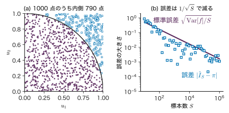
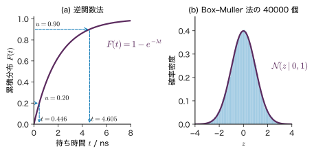
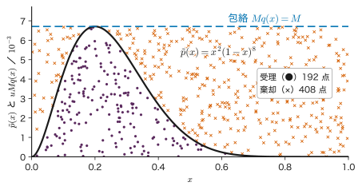
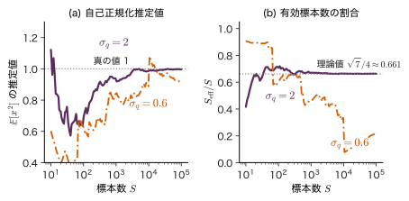
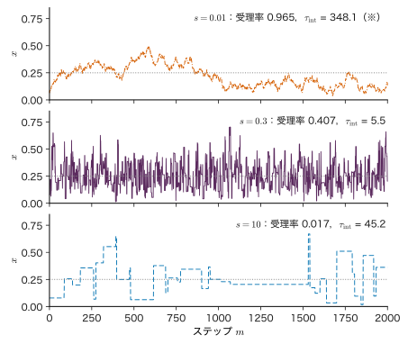
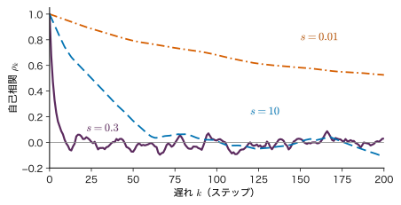
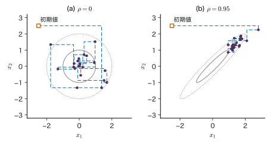
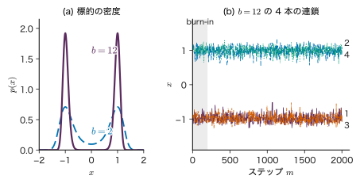
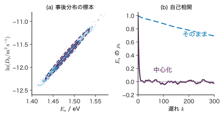

第21章サンプリング法 — 乱数で積分する
- 事後分布は「尤度 × 事前分布」までは書けるのに，割り算に使う正規化定数（周辺尤度．証拠（エビデンス）とも呼ぶ）が計算できない．それでも，その分布に従う標本を取り出して平均や誤差棒を求めるにはどうすればよいか．
- Markov 連鎖 Monte Carlo 法（MCMC）を 2000 ステップ回し，最初の 1 割を捨てたら，トレース図は落ち着いて見えた．これで「十分に回した」と言ってよいか．
- 拡散係数の Arrhenius 式の活性化エネルギーを MCMC で推定するとき，同じ計算時間でも有効標本数（独立な標本に換算した数）が 100 倍も違うことがあるのはなぜか．
正方形の板に砂粒をでたらめに落とし，内側に描いた四分円に入った割合を数えると，円周率がおよそ求まる．1000 粒なら誤差は 0.05 程度，100 万粒なら 0.002 程度である．面積を積分で求める代わりに，乱数で数える．この素朴な考え方が，本章の出発点である Monte Carlo（モンテカルロ）法である．
機械学習では，予測や不確かさの評価のほとんどが「ある分布での期待値」の形をしている．事後平均，事後予測分布，誤差棒，周辺尤度は，どれも分布についての積分である．第20章では，その分布を扱いやすい形（Gauss 分布など）で近似した．本章では，分布の形には手を加えず，その分布に従う標本を取り出して積分を平均で置き換える．前半（21.1〜21.4 節）では独立な標本を作る方法（逆関数法，Box–Muller 法，棄却サンプリング，重点サンプリング）を，後半（21.5〜21.10 節）では正規化定数が分からなくても使える Markov 連鎖 Monte Carlo 法（Metropolis–Hastings 法と Gibbs サンプリング）と，その収束の診断を扱う．最後に，この方法が統計力学の計算から生まれたことと，合金の配置・吸着・材料パラメーターの推定への使い方を示す．
- Monte Carlo 積分の推定量が不偏であり，標準誤差が次元によらず $1/\sqrt{S}$ で減ることを導ける．
- 逆関数法と Box–Muller 法で，一様乱数から指数分布・Cauchy 分布・Gauss 分布の乱数を作れる．
- 棄却サンプリングと重点サンプリングの正しさを示し，受理率・有効標本数を計算し，高次元や裾の軽い提案分布で破綻する理由を説明できる．
- 詳細釣り合いから定常性を証明し，Metropolis–Hastings 法が正規化定数なしで標的分布を定常分布にもつことを示せる．3 状態の例で遷移行列を手で作れる．
- 自己相関・積分自己相関時間・有効標本数を計算し，提案幅の調整と Gibbs サンプリングの遅さを説明できる．
- burn-in を捨てても収束は保証されないこと，$\hat{R}$ とトレース図の使い方と限界を，二重井戸の例で説明できる．
- Boltzmann 分布のサンプリング（Ising 模型，合金の配置，吸着）と，材料パラメーターの事後分布の MCMC に，本章の式を対応づけられる．
入門ルートで読む節：この章は詳しいルートの章である．入門ルートでは 21.14（まとめ）だけを読み，次の第22章へ進んでよい．
記号：この章で使う文字
標的分布（標本を取り出したい分布）を $p(x)$ と書き，正規化されていない形を $\tilde{p}(x)$ とする：$p(x)=\tilde{p}(x)/Z$，$Z=\int\tilde{p}(x)\,\dd x$．ベイズ推定では $x$ がパラメーター $\bm{\theta}$，$\tilde{p}$ が $p(\data\mid\bm{\theta})\,p(\bm{\theta})$，$Z$ が周辺尤度 $p(\data)$ に当たる．標本の数は $S$，標本の番号は上付きの $(m)$ で $x^{(m)}$（$m=1,\dots,S$）と書く（下付きの $x_i$ はベクトルの成分）．Metropolis–Hastings 法の提案幅は小文字の $s$ である（標本数 $S$ と区別する）．遷移確率は $T(x'\mid x)$ と必ず引数つきで書き，21.10 節以降の温度 $T$ とは $k_{\mathrm B}T$ の形で区別する．$f$ の分散は $\Var[f]$，標準偏差は $\sqrt{\Var[f]}$ と書く（$\sigma_f$ はガウス過程の信号の標準偏差に使う記号なので使わない）．21.8 節の積分自己相関時間は $\tau_{\mathrm{int}}$ と書く（第26・27章の temperature $\tau$ とは別の量）．21.8 節の自己相関 $\rho_k$ は必ず添字つきで書き，21.9 節の相関係数 $\rho$（添字なし）と区別する．
21.1 Monte Carlo 積分 — 期待値を標本平均で置き換える詳しいルート
21.1.1 円周率を乱数で数える
一辺 1 の正方形の中に一様乱数で点 $(u_1,u_2)$ を落とす．点が四分円 $u_1^{2}+u_2^{2}\le1$ に入る確率は面積比 $\pi/4$ である．だから「入った割合 × 4」は円周率の推定値になる．図21.1(a) は 1000 点を落とした結果で，内側に 790 点入ったので推定値は $4\times0.790=3.16$ である．点を増やすと推定値は $\pi$ に近づき，その誤差はおよそ $1/\sqrt{S}$ の割合で小さくなる（図21.1(b)）．

21.1.2 推定量の定義と性質
一般に，関数 $f(x)$ の分布 $p(x)$ での期待値
\begin{equation} I=\Ex_{p}[f(x)]=\int f(x)\,p(x)\,\dd x \label{eq:21-I} \end{equation}を求めたいとする．$x$ はスカラーでもベクトル $\bm{x}\in\R^{D}$ でもよい．円周率の例では $x=(u_1,u_2)$，$p$ は単位正方形の一様分布，$f(x)=4\cdot\mathbb{1}[u_1^{2}+u_2^{2}\le1]$（$\mathbb{1}[\cdot]$ は条件が成り立てば 1，そうでなければ 0）で，$I=4\times\pi/4=\pi$ である．
定義21.1 Monte Carlo 推定量
$p(x)$ から独立に引いた標本 $x^{(1)},\dots,x^{(S)}$ を使って，期待値 \eqref{eq:21-I} を
\begin{equation} \hat{I}_S=\frac{1}{S}\sum_{m=1}^{S}f\bigl(x^{(m)}\bigr) \label{eq:21-mc} \end{equation}で推定する．これを Monte Carlo 推定量という．
定理21.1 不偏性と標準誤差
$f(x)$ の分散 $\Var[f]\equiv\Var_{p}[f(x)]$ が有限なら，$\Ex[\hat{I}_S]=I$（不偏），$\Var[\hat{I}_S]=\Var[f]/S$ である．したがって推定量のばらつき（標準誤差）は $\sqrt{\Var[f]/S}$ で，$x$ の次元 $D$ を含まない．
証明
$f^{(m)}=f(x^{(m)})$ と書く．各 $x^{(m)}$ は $p$ に従うので $\Ex[f^{(m)}]=I$，$\Var[f^{(m)}]=\Var[f]$ である．期待値の線形性（第2章 2.5 節）から
$$ \Ex[\hat{I}_S]=\frac1S\sum_{m=1}^{S}\Ex[f^{(m)}]=\frac1S\cdot S\,I=I . $$$x^{(m)}$ は互いに独立なので $f^{(m)}$ どうしの共分散は 0 であり，和の分散は分散の和になる（第2章 定理2.6）．定数 $1/S$ は分散では 2 乗で出るので
$$ \begin{aligned} \Var[\hat{I}_S]&=\frac{1}{S^{2}}\sum_{m=1}^{S}\Var[f^{(m)}]\\ &=\frac{1}{S^{2}}\cdot S\,\Var[f]=\frac{\Var[f]}{S} . \end{aligned} $$平方根をとると標準誤差 $\sqrt{\Var[f]/S}$ を得る．どこにも $D$ は現れない．
（導出終わり）
さらに中心極限定理（第2章 2.8 節）から，$S$ が大きければ $\hat{I}_S$ は近似的に $\Normal(I,\Var[f]/S)$ に従う．$\Var[f]$ は標本分散 $\widehat{\Var}[f]$ で見積もれるので，「$\hat{I}_S\pm1.96\,\sqrt{\widehat{\Var}[f]/S}$」が近似的な 95% 区間になる．この誤差の見積もりは，標本が独立であることに頼っている．21.8 節では，標本が独立でない MCMC でこれを直す．
21.1.3 なぜ高次元で格子より有利か
1 次元の積分なら，Simpson 則で $n$ 点の格子をとると誤差は $n^{-4}$ に比例して減る．Monte Carlo の $n^{-1/2}$ よりずっと速い．ところが $D$ 次元で各軸に $n$ 点の格子をとると，点の総数は $N=n^{D}$ になる．各軸の誤差 $n^{-4}$ を $N$ で書き直すと $N^{-4/D}$ であり，Monte Carlo の $N^{-1/2}$ と比べると，$4/D\lt1/2$，すなわち $D\gt8$ で Monte Carlo の方が速く誤差が減る．各軸 10 点の粗い格子でも $D=10$ なら $10^{10}$ 点が必要で，事後分布のパラメーターが数十個ある問題では格子は使えない．Monte Carlo の誤差が次元によらないという性質が，本章のすべての方法の土台である．
ただし，これは $p$ から独立な標本が引けるならという条件つきで，高次元で標本を引くこと自体が難しい（21.3 節以降）．
例題21.1 円周率の推定の誤差
円周率の例で，(1) $f$ の分散 $\Var[f]$ を求めよ．(2) $S=1000$ と $S=10^{4}$ の標準誤差を求めよ．(3) 標準誤差を $10^{-3}$ 以下にするには何点必要か．(4) 図21.1(a) の推定値 3.16 は，(2) の標準誤差から見て妥当か．
解答 (1) $f$ は確率 $\pi/4$ で 4，確率 $1-\pi/4$ で 0 をとる．$\Ex[f]=\pi$，$\Ex[f^{2}]=16\cdot\pi/4=4\pi$ なので（第2章 定理2.5 の分散の公式）
$$ \begin{aligned} \Var[f]&=\Ex[f^{2}]-(\Ex[f])^{2}\\ &=4\pi-\pi^{2}=\pi(4-\pi)\approx2.697 , \end{aligned} $$$\sqrt{\Var[f]}\approx1.642$ である．(2) $S=1000$ で $1.642/\sqrt{1000}\approx0.0519$，$S=10^{4}$ で $1.642/100\approx0.0164$．(3) $\sqrt{\Var[f]/S}\le10^{-3}$ より $S\ge\Var[f]/10^{-6}\approx2.70\times10^{6}$ 点．小数第 3 位を 1 桁よくするたびに点の数は 100 倍になる．(4) 誤差 $3.16-3.1416=0.018$ は標準誤差 0.052 の約 0.35 倍で，偶然のばらつきの範囲に十分入っている．
21.2 乱数の作り方 — 擬似乱数，逆関数法，Box–Muller 法詳しいルート
21.2.1 擬似乱数と seed
計算機が作る乱数は，決まった漸化式で次々に計算される数列であり，本当の意味ででたらめではない．これを擬似乱数（pseudo-random number）という．よい擬似乱数の列は，区間 $[0,1)$ の一様分布からの独立な標本と統計的に見分けがつかないように設計されている．代表例の Mersenne Twister は周期が $2^{19937}-1$ である（Matsumoto & Nishimura, 1998）．本書の Python の計算は NumPy の np.random.default_rng(seed)，シミュレーターは mulberry32 という小さな生成器を使う．
漸化式の初期値を seed（種）という．同じ seed からは同じ列が出るので，計算を再現できる．論文や実験記録に Monte Carlo の結果を書くときは，seed と生成器を記録しておくと，他人が同じ数値を得て確かめられる．逆に，複数の連鎖（21.10 節）や並列計算では，連鎖ごとに別の seed を使わないと，同じ列を何度も使ってしまう．
以下では，区間 $[0,1)$ の一様乱数 $u$ が手に入るとして，ほかの分布の乱数を作る．
21.2.2 逆関数法
定理21.2 逆関数法
連続な確率変数の累積分布関数 $F(x)=P(\text{確率変数}\le x)$ が狭義単調増加で，逆関数 $F^{-1}$ をもつとする．$u$ を $(0,1)$ の一様分布から引き，$x=F^{-1}(u)$ とおくと，$x$ は累積分布関数 $F$ の分布に従う．
証明
任意の $a$ について，$F$ が増加関数なので「$F^{-1}(u)\le a$」と「$u\le F(a)$」は同じ条件である．一様分布では $P(u\le c)=c$（$0\le c\le1$）なので
$$ P\bigl(F^{-1}(u)\le a\bigr)=P\bigl(u\le F(a)\bigr)=F(a) . $$左辺は作った $x$ の累積分布関数そのものなので，$x$ の分布は $F$ である．
（導出終わり）
図21.2(a) のように，縦軸に一様乱数 $u$ をとり，累積分布関数のグラフで横軸に写すと読める．$F$ の傾きが急な所（密度の高い所）には多くの $u$ が集まる．
- 指数分布（第3章 例題3.1．率 $\lambda\gt0$，ここでの $\lambda$ は正則化係数ではない）：$p(t)=\lambda e^{-\lambda t}$（$t\ge0$），$F(t)=1-e^{-\lambda t}$．$u=1-e^{-\lambda t}$ を $t$ について解くと
- $1-u$ も一様分布に従うので $t=-\ln u/\lambda$ でもよい（第2章 例題2.8 は $\lambda=1$ の場合）．
- Cauchy 分布（第3章 3.7 節．位置 $x_0$，半値半幅 $\gamma$）：$p(x)=\dfrac{1}{\pi}\dfrac{\gamma}{(x-x_0)^{2}+\gamma^{2}}$ を積分すると $F(x)=\dfrac12+\dfrac1\pi\arctan\dfrac{x-x_0}{\gamma}$．$u=F(x)$ を $x$ について解くと
逆関数法は，$F^{-1}$ が式で書ける 1 次元の分布には最も簡単で確実な方法である．Gauss 分布の $F$ は誤差関数で，その逆関数は初等関数で書けない．そこで次の方法を使う．
21.2.3 Box–Muller 法
1 個の Gauss 乱数を直接作るのは難しいが，2 個を組で作ると極座標の計算で簡単になる．これが Box–Muller 法（Box & Muller, 1958）である．
定理21.3 Box–Muller 法
$u_1,u_2$ を $(0,1)$ の独立な一様乱数とし，
\begin{equation} \begin{aligned} z_1&=\sqrt{-2\ln u_1}\cos(2\pi u_2),\\ z_2&=\sqrt{-2\ln u_1}\sin(2\pi u_2) \end{aligned} \label{eq:21-bm} \end{equation}とおくと，$z_1,z_2$ は独立な標準 Gauss 分布 $\Normal(0,1)$ に従う．
導出：極座標への変数変換を逆向きにたどる
独立な $z_1,z_2\sim\Normal(0,1)$ の同時密度は
$$ p(z_1,z_2)=\frac{1}{2\pi}\exp\!\left(-\frac{z_1^{2}+z_2^{2}}{2}\right) $$で，$z_1^{2}+z_2^{2}$ だけによる．極座標 $z_1=r\cos\varphi$，$z_2=r\sin\varphi$（$r\gt0$，$0\le\varphi\lt2\pi$）に変えると，面積要素は $\dd z_1\,\dd z_2=r\,\dd r\,\dd\varphi$（Jacobi 行列式が $r$．大学数学 第7章 7.3）なので，第2章 2.6 節の多変数の変数変換（密度に Jacobi 行列式の絶対値を掛ける）により
$$ p(r,\varphi)=\frac{1}{2\pi}e^{-r^{2}/2}\cdot r=\underbrace{\frac{1}{2\pi}}_{\varphi\text{ の密度}}\times\underbrace{r\,e^{-r^{2}/2}}_{r\text{ の密度}} . $$積に分かれるので $r$ と $\varphi$ は独立で，$\varphi$ は $[0,2\pi)$ の一様分布である．さらに $v=r^{2}/2$ とおくと $\dd v=r\,\dd r$ なので，$v$ の密度は $r e^{-r^{2}/2}\big/\abs{\dd v/\dd r}=e^{-v}$，つまり $v$ は率 1 の指数分布である．
したがって逆向きに，指数分布の乱数 $v=-\ln u_1$（式 \eqref{eq:21-exp} で $\lambda=1$）と一様な角度 $\varphi=2\pi u_2$ を作り，$r=\sqrt{2v}=\sqrt{-2\ln u_1}$ として直交座標に戻せば，独立な 2 個の標準 Gauss 乱数が得られる．これが式 \eqref{eq:21-bm} である．
（導出終わり）
平均 $\mu$，分散 $\sigma^{2}$ の Gauss 乱数は $\mu+\sigma z$ で作る．多変量 $\Normal(\bm{\mu},\bm{\Sigma})$ は，$\bm{\Sigma}=\bm{L}\bm{L}^{\tp}$（Cholesky 分解）として $\bm{\mu}+\bm{L}\bm{z}$（$\bm{z}$ は独立な標準 Gauss 乱数を並べたもの）で作る．$\Cov[\bm{L}\bm{z}]=\bm{L}\bm{I}\bm{L}^{\tp}=\bm{\Sigma}$ となるからである．

例題21.2 一様乱数から指数分布・Cauchy 分布・Gauss 分布へ
(1) 点欠陥の跳躍の待ち時間が率 $\lambda=0.5\ \mathrm{ns^{-1}}$ の指数分布に従うとする（教育用の設定）．$u=0.20$ と $u=0.90$ から式 \eqref{eq:21-exp} で待ち時間を作れ．(2) Raman 線の形を $x_0=520\ \mathrm{cm^{-1}}$，$\gamma=2\ \mathrm{cm^{-1}}$ の Cauchy 分布（Lorentz 型）とする．$u=0.90$ と $u=0.25$ から式 \eqref{eq:21-cauchy} で $x$ を作れ．(3) $(u_1,u_2)=(0.30,\,0.80)$ から Box–Muller 法で $(z_1,z_2)$ を作れ．
解答 (1) $t=-\ln(1-0.20)/0.5=-2\ln0.80$ $=2\times0.2231=0.446\ \mathrm{ns}$．$t=-\ln(0.10)/0.5$ $=2\times2.3026=4.605\ \mathrm{ns}$．平均待ち時間 $1/\lambda=2\ \mathrm{ns}$ より長い値は，$u$ が $1-e^{-1}\approx0.632$ を超えたときに出る．
(2) $u=0.90$：$\pi(0.90-0.5)=0.4\pi$，$\tan(0.4\pi)=3.0777$ なので $x=520+2\times3.0777=526.16\ \mathrm{cm^{-1}}$．$u=0.25$：$\tan(-0.25\pi)=-1$ なので $x=520-2=518\ \mathrm{cm^{-1}}$．$u=0.25$ と $0.75$ は中心から半値半幅 $\gamma$ だけ離れた点に写る．$u$ が 0 か 1 に近いと $\tan$ が発散し，非常に遠い値が出る．これが Cauchy 分布の重い裾である．
(3) $-2\ln0.30=-2\times(-1.2040)=2.4079$，$r=\sqrt{2.4079}=1.5518$．$2\pi\times0.80$ は $288^{\circ}$ で，$\cos288^{\circ}=0.3090$，$\sin288^{\circ}=-0.9511$．したがって $z_1=1.5518\times0.3090=0.4795$，$z_2=1.5518\times(-0.9511)=-1.4758$．
21.3 棄却サンプリング — 包絡の下に点を落とす詳しいルート
21.3.1 考え方
逆関数法は $F^{-1}$ が分からないと使えない．しかし，正規化されていない密度 $\tilde{p}(x)$ の値さえ計算できれば，円周率の例と同じ「点を落として数える」考え方で $p$ の標本を作れる．$\tilde{p}(x)$ のグラフの下の領域に一様に点を落とせば，その点の $x$ 座標は $p(x)$ に従う．領域を直接は描けないので，標本を引きやすい分布 $q(x)$（提案分布）を定数倍した $Mq(x)$ で上から覆い（包絡），その下に一様に点を落として，$\tilde{p}$ の下に入った点だけを残す（図21.3）．
定義21.2 棄却サンプリング
すべての $x$ で $\tilde{p}(x)\le M\,q(x)$ となる定数 $M\gt0$ を選ぶ．次を繰り返す．
- $x\sim q(x)$ を引き，$u\sim[0,1)$ の一様分布を引く．
- $u\le\dfrac{\tilde{p}(x)}{M\,q(x)}$ なら $x$ を受理して標本とする．そうでなければ捨てる（棄却）．
定理21.4 棄却サンプリングの正しさと受理率
受理された $x$ は $p(x)=\tilde{p}(x)/Z$ に従う．1 回の試行で受理される確率は $Z/M$ である．とくに $\tilde{p}$ が正規化されている（$Z=1$）なら受理率は $1/M$ である．
証明
1 回の試行で「$x$ が $[a,a+\dd a]$ に入り，かつ受理される」確率は，$q$ から $x$ をその幅に引く確率 $q(a)\,\dd a$ と，そこでの受理確率 $\tilde{p}(a)/(Mq(a))$（$\le1$ なので確率として意味をもつ）の積である．
$$ \begin{aligned} &P(x\in[a,a+\dd a],\ \text{受理})\\ &\quad=q(a)\,\dd a\times\frac{\tilde{p}(a)}{M\,q(a)}=\frac{\tilde{p}(a)}{M}\,\dd a . \end{aligned} $$$q$ が約分されて消えることが要点である．全部の $a$ について積分すると受理される確率
$$ P(\text{受理})=\int\frac{\tilde{p}(a)}{M}\,\dd a=\frac{Z}{M} $$を得る．受理されたという条件のもとでの $x$ の密度は，条件付き確率の定義（第2章 2.2 節）から
$$ \begin{aligned} &\frac{P(x\in[a,a+\dd a],\ \text{受理})}{P(\text{受理})\,\dd a}\\ &\quad=\frac{\tilde{p}(a)/M}{Z/M}=\frac{\tilde{p}(a)}{Z}=p(a) . \end{aligned} $$（導出終わり）
受理されるまでの試行回数は成功確率 $Z/M$ の幾何分布に従い，平均は $M/Z$ 回である．$M$ はできるだけ小さく，つまり $Mq$ が $\tilde{p}$ にぴったり沿うように選ぶ．$q$ の裾が $\tilde{p}$ の裾より軽い（速く 0 になる）と，どんな $M$ でも $\tilde{p}\le Mq$ にできないので，提案分布は裾の重いものを選ぶ．

例題21.3 Beta(3,9) を一様分布の包絡で引く
10 回中 2 回成功した試料の成功率 $\mu$ を一様な事前分布でベイズ推定すると，事後分布は $\mathrm{Beta}(\mu\mid3,9)$ である（第4章 4.4 節）．本章では $x=\mu$ と書き，$\tilde{p}(x)=x^{2}(1-x)^{8}$（$0\lt x\lt1$）を一様分布 $q(x)=1$ で包む．(1) $\tilde{p}\le M$ を満たす最小の $M$ を求めよ．(2) $Z=\int_0^1\tilde{p}\,\dd x$ と受理率を求めよ．(3) 1 個の標本を得るのに平均何回提案するか．(4) $x=0.5$，$u=0.10$ の組は受理されるか．
解答 (1) $\ln\tilde{p}=2\ln x+8\ln(1-x)$ を微分して 0 とおくと $2/x-8/(1-x)=0$，すなわち $2(1-x)=8x$ で $x=0.2$．最大値は $M=\tilde{p}(0.2)=0.04\times0.8^{8}$ $=0.04\times0.16777=6.711\times10^{-3}$．
(2) ベータ関数（大学数学 第32章）で $Z=B(3,9)=\dfrac{2!\,8!}{11!}$ $=\dfrac{2\times40320}{39916800}=\dfrac{1}{495}$ $\approx2.020\times10^{-3}$．受理率は $Z/M=0.002020/0.006711$ $\approx0.301$．
(3) $M/Z\approx3.32$ 回．
(4) $\tilde{p}(0.5)=0.25\times0.5^{8}=9.766\times10^{-4}$，$\tilde{p}(0.5)/M=0.1455$．$u=0.10\le0.1455$ なので受理する．同じ $u=0.10$ でも $x=0.9$ なら $\tilde{p}(0.9)=0.81\times10^{-8}$ で比はほぼ 0 なので棄却される．
21.3.2 高次元で破綻する
棄却サンプリングは 1〜2 次元ではよく働くが，次元が上がると受理率が指数関数的に下がる．標的を $D$ 次元の標準 Gauss 分布 $\Normal(\bm{0},\bm{I})$，提案を少し広い $\Normal(\bm{0},\sigma_q^{2}\bm{I})$（$\sigma_q\gt1$）とする．密度の比は
$$ \frac{p(\bm{x})}{q(\bm{x})}=\sigma_q^{D}\exp\!\left[-\frac{\norm{\bm{x}}^{2}}{2}\left(1-\frac{1}{\sigma_q^{2}}\right)\right]\le\sigma_q^{D} $$で，最大は $\bm{x}=\bm{0}$ のときなので最小の $M$ は $\sigma_q^{D}$，受理率は $\sigma_q^{-D}$ である．提案分布の幅がわずか 10% 広いだけ（$\sigma_q=1.1$）でも，受理率は $D=1$ で 0.909，$D=10$ で 0.386，$D=100$ で $7.3\times10^{-5}$ に落ちる．100 次元では 1 個の標本に約 14000 回の提案が要る．高次元では「包絡を作る」こと自体が無理になる．これが 21.5 節以降の Markov 連鎖の方法へ進む理由である．
21.4 重点サンプリング — 別の分布で引いて重みで直す詳しいルート
21.4.1 重みつきの平均
期待値を求めるだけなら，標本を $p$ に従わせる必要はない．引きやすい分布 $q$ から引き，$p$ と $q$ のずれを重みで補えばよい．$q(x)\gt0$ が $p(x)\gt0$ となる所すべてで成り立つとすると，
\begin{equation} \begin{aligned} I&=\int f(x)\,p(x)\,\dd x\\ &=\int f(x)\,\frac{p(x)}{q(x)}\,q(x)\,\dd x\\ &=\Ex_{q}\!\left[f(x)\,w(x)\right],\\ w(x)&=\frac{p(x)}{q(x)} \end{aligned} \label{eq:21-is} \end{equation}である．2 番目の等号は $q/q=1$ を掛けただけである．$q$ から引いた $x^{(m)}$ で
\begin{equation} \begin{aligned} \hat{I}_{\mathrm{IS}}&=\frac1S\sum_{m=1}^{S}w^{(m)}f\bigl(x^{(m)}\bigr),\\ w^{(m)}&=\frac{p(x^{(m)})}{q(x^{(m)})} \end{aligned} \label{eq:21-is-est} \end{equation}とすれば，定理21.1 と同じ計算で不偏な推定量になる（$f$ の代わりに $wf$ を $q$ のもとで平均している）．これを重点サンプリング（importance sampling）という．$w$ を重要度重みという．
21.4.2 正規化定数が分からないとき：自己正規化
$p$ の代わりに $\tilde{p}$ しか計算できないときは，$\tilde{w}^{(m)}=\tilde{p}(x^{(m)})/q(x^{(m)})$ を使う．$\Ex_q[\tilde{w}]=\int(\tilde{p}/q)\,q\,\dd x=Z$ なので，まず
\begin{equation} \hat{Z}=\frac1S\sum_{m=1}^{S}\tilde{w}^{(m)} \label{eq:21-zhat} \end{equation}が $Z$ の不偏推定量になる（正規化定数そのものが求まる）．期待値は，分子と分母を同じ標本で推定して
\begin{equation} \begin{aligned} \hat{I}_{\mathrm{SN}}&=\frac{\sum_{m}\tilde{w}^{(m)}f(x^{(m)})}{\sum_{m}\tilde{w}^{(m)}}\\ &=\sum_{m=1}^{S}\bar{w}^{(m)}f\bigl(x^{(m)}\bigr),\\ \bar{w}^{(m)}&=\frac{\tilde{w}^{(m)}}{\sum_{m'}\tilde{w}^{(m')}} \end{aligned} \label{eq:21-sn} \end{equation}とする．これを自己正規化重点サンプリングという．分子は $Z\,I$ の，分母は $Z$ の不偏推定量で，比をとると $Z$ が消える．比の期待値は期待値の比と一致しないので $\hat{I}_{\mathrm{SN}}$ にはわずかな偏りがあるが，$S\to\infty$ で $I$ に収束する．
21.4.3 有効標本数と裾の軽い提案分布の危険
重みが一部の標本に集中すると，$S$ 個引いても実質的には数個分の情報しかない．その目安が有効標本数である．
\begin{equation} S_{\mathrm{eff}}=\frac{\left(\sum_{m}\tilde{w}^{(m)}\right)^{2}}{\sum_{m}\bigl(\tilde{w}^{(m)}\bigr)^{2}} \label{eq:21-ess-is} \end{equation}重みが全部等しければ $S_{\mathrm{eff}}=S$，1 個だけが 0 でなければ $S_{\mathrm{eff}}=1$ である（重みを定数倍しても値は変わらない）．$S$ が大きいとき，$S_{\mathrm{eff}}/S$ は $(\Ex_q[w])^{2}/\Ex_q[w^{2}]=1/\Ex_q[w^{2}]$（$w=p/q$ は正規化された重み）に近づく．
$\Ex_q[w^{2}]=\int p^{2}/q\,\dd x$ は，$q$ の裾が $p$ より軽いと発散する．標的 $p=\Normal(0,1)$，提案 $q=\Normal(0,\sigma_q^{2})$ で計算すると
$$ \frac{p(x)^{2}}{q(x)}=\frac{\sigma_q}{\sqrt{2\pi}}\exp\!\left[-x^{2}\left(1-\frac{1}{2\sigma_q^{2}}\right)\right] $$なので，$1-1/(2\sigma_q^{2})\gt0$，すなわち $\sigma_q^{2}\gt1/2$ のときだけ積分が有限で，Gauss 積分 $\int e^{-cx^{2}}\dd x=\sqrt{\pi/c}$ から
\begin{equation} \Ex_q[w^{2}]=\frac{\sigma_q^{2}}{\sqrt{2\sigma_q^{2}-1}} \label{eq:21-w2} \end{equation}となる（$\sigma_q^{2}\gt\tfrac12$ のとき）．$\sigma_q^{2}\le1/2$ では無限大である．このとき推定量の分散は無限大で，まれに出る巨大な重みが推定値を突然動かす．困るのは，有限の $S$ では重みの標本分散が有限に見え，計算が「収束したように」見えることである（図21.4 の $\sigma_q=0.6$）．提案分布は標的より広めに，裾を重めに選ぶ．

例題21.4 3 個の標本で重点サンプリング
標的を $\tilde{p}(x)=e^{-x^{2}/2}$（$Z=\sqrt{2\pi}\approx2.507$），提案を $q=\Normal(0,2^{2})$ とする．$q$ から $x=-1.0,\ 0.5,\ 2.5$ を得た．(1) 各重み $\tilde{w}=\tilde{p}/q$ を求めよ．(2) 式 \eqref{eq:21-zhat} で $Z$ を推定せよ．(3) 自己正規化で $\Ex_p[x^{2}]$ を推定せよ（真の値 1）．(4) 有効標本数を求めよ．(5) $S$ が大きいときの $S_{\mathrm{eff}}/S$ を式 \eqref{eq:21-w2} で求めよ．
解答 (1) $q(x)=\dfrac{1}{2\sqrt{2\pi}}e^{-x^{2}/8}$ なので $\tilde{w}(x)=2\sqrt{2\pi}\,e^{-x^{2}/2+x^{2}/8}=2\sqrt{2\pi}\,e^{-3x^{2}/8}$．$2\sqrt{2\pi}=5.013$ を使って
$$ \begin{aligned} \tilde{w}(-1.0)&=5.013\,e^{-0.375}=3.446,\\ \tilde{w}(0.5)&=5.013\,e^{-0.09375}=4.565,\\ \tilde{w}(2.5)&=5.013\,e^{-2.344}=0.481 . \end{aligned} $$(2) $\hat{Z}=(3.446+4.565+0.481)/3$ $=8.492/3=2.83$（真の値 2.507．3 個なので外れは大きい）．(3) 正規化した重みは $\bar{w}=(0.406,\ 0.538,\ 0.057)$．$\hat{I}_{\mathrm{SN}}=0.406\times1.00$ $+0.538\times0.25$ $+0.057\times6.25$ $=0.406+0.134+0.354$ $=0.894$．(4) 分母は $3.446^{2}+4.565^{2}+0.481^{2}=32.94$，分子は $8.492^{2}=72.11$ なので $S_{\mathrm{eff}}=72.11/32.94=2.19$．3 個のうち実質 2.2 個分である．(5) $\sigma_q=2$ を代入して $\Ex_q[w^{2}]=4/\sqrt{7}=1.512$，$S_{\mathrm{eff}}/S\to1/1.512=\sqrt{7}/4\approx0.661$（図21.4(b) の点線）．
高次元では，各次元の $\Ex_q[w^{2}]$ が 1 より少し大きいだけでも $D$ 乗されて，$S_{\mathrm{eff}}/S$ は指数関数的に小さくなる．
21.5 Markov 連鎖 — 定常分布と詳細釣り合い詳しいルート
21.5.1 独立な標本を諦める
21.3〜21.4 節の方法は，$p$ をまるごと覆う提案分布 $q$ を一度に用意する必要があり，高次元では破綻した．発想を変えて，いまの標本の近くで次の標本を作ることにする．このとき標本は独立でなくなり，前の標本に依存する列になる．この列が「十分長く歩けば $p$ に従う」ように歩き方を設計するのが，Markov 連鎖 Monte Carlo 法（Markov chain Monte Carlo，MCMC）である．その設計の道具が Markov 連鎖の理論である．
定義21.3 Markov 連鎖と遷移確率
確率変数の列 $x^{(0)},x^{(1)},x^{(2)},\dots$ で，次の値の分布がいまの値だけで決まり，それより前の値によらないもの
\begin{equation} \begin{aligned} &p\bigl(x^{(m+1)}\mid x^{(m)},\\ &\qquad x^{(m-1)},\dots,x^{(0)}\bigr)\\ &\quad=T\bigl(x^{(m+1)}\mid x^{(m)}\bigr) \end{aligned} \label{eq:21-markov} \end{equation}を（時間的に一様な）Markov 連鎖といい，$T(x'\mid x)$ を遷移確率（連続なら遷移密度）という．$x$ が $K$ 個の状態 $\{1,\dots,K\}$ をとるときは，$T_{ij}=T(x'=j\mid x=i)$ を並べた遷移行列 $\bm{T}\in\R^{K\times K}$ を使う．行が「いまの状態」，列が「次の状態」で，各行の和は 1 である（第22章の隠れ Markov モデルの $A_{ij}$ と同じ向き）．
$m$ ステップ目の分布を行ベクトル $\bm{\pi}^{(m)}=(\pi^{(m)}_1,\dots,\pi^{(m)}_K)$（$\pi^{(m)}_i=P(x^{(m)}=i)$．ここでの $\pi$ は円周率ではない）とすると，加法定理と乗法定理（第2章 2.2 節）から
\begin{equation} \begin{aligned} \pi^{(m+1)}_j&=\sum_{i=1}^{K}\pi^{(m)}_i\,T_{ij},\\ \bm{\pi}^{(m+1)}&=\bm{\pi}^{(m)}\bm{T} \end{aligned} \label{eq:21-evolve} \end{equation}である．「次に $j$ にいる確率」は「いま $i$ にいて，$i$ から $j$ へ移る確率」を全部の $i$ について足したものだからである．連続の場合は和が積分になる：$\pi^{(m+1)}(x')=\int T(x'\mid x)\,\pi^{(m)}(x)\,\dd x$．
定義21.4 定常分布
$\bm{\pi}\bm{T}=\bm{\pi}$（連続なら $\int T(x'\mid x)\,\pi(x)\,\dd x=\pi(x')$）を満たす分布 $\pi$ を，遷移確率 $T$ の定常分布（不変分布）という．一度 $\pi$ に従えば，その後もずっと $\pi$ に従う．
MCMC の目標は，標的 $p$ を定常分布にもつ遷移確率 $T$ を作り，さらにどこから出発しても $\bm{\pi}^{(m)}$ が $p$ に近づくようにすることである．前者を保証する簡単な十分条件が詳細釣り合いである．
21.5.2 詳細釣り合い
定理21.5 詳細釣り合いから定常性が出る
すべての $x,x'$ について
\begin{equation} \begin{aligned} &p(x)\,T(x'\mid x)\\ &\quad=p(x')\,T(x\mid x') \end{aligned} \label{eq:21-db} \end{equation}が成り立つ（詳細釣り合い，detailed balance）なら，$p$ は $T$ の定常分布である．
証明
離散の場合を示す（連続なら和を積分に替えるだけである）．定常性の左辺 $\sum_x p(x)T(x'\mid x)$ の各項に式 \eqref{eq:21-db} を使うと
$$ \begin{aligned} &\sum_{x}p(x)\,T(x'\mid x)\\ &\quad=\sum_{x}p(x')\,T(x\mid x') . \end{aligned} $$右辺の $p(x')$ は和の添字 $x$ によらないので外に出せて
$$ \begin{aligned} \sum_{x}p(x')\,T(x\mid x')&=p(x')\sum_{x}T(x\mid x')\\ &=p(x')\times1=p(x') . \end{aligned} $$最後に「$x'$ から次にどこかへ行く確率の合計は 1」（遷移行列の行の和が 1）を使った．以上で $\sum_x p(x)T(x'\mid x)=p(x')$，すなわち定常性が示された．
（導出終わり）
詳細釣り合いは「$x$ から $x'$ へ流れる確率の量」と「$x'$ から $x$ へ戻る量」がすべての組で等しいという条件である．定常性は「各状態へ入る量の合計と出る量の合計が等しい」ことしか要求しないので，詳細釣り合いはそれより強い．定常だが詳細釣り合いを満たさない連鎖もある（演習21.4 の，一方向にぐるぐる回る連鎖）．詳細釣り合いの利点は，2 状態ずつの局所的な条件なので，全体の和（正規化定数）を知らなくても確かめられることである．
21.5.3 収束するための条件：既約性と非周期性
定常分布をもつだけでは，どこから出発しても $p$ に近づくとは限らない．次の 2 つが要る．
- 既約性（irreducible）：どの状態からどの状態へも，何ステップかかけて正の確率で行ける．行けない領域があると，出発点によって見える範囲が変わる．
- 非周期性（aperiodic）：一定の周期で同じ状態に戻る，という規則がない．たとえば $\bm{T}=\begin{pmatrix}0&1\\1&0\end{pmatrix}$ は 2 状態を交互に行き来し，状態 1 から出発すると $\bm{\pi}^{(m)}$ は $(1,0)$ と $(0,1)$ を交互にとって収束しない．
状態が有限個の連鎖では，既約かつ非周期なら定常分布はただ 1 つで，どの初期分布からでも $\bm{\pi}^{(m)}\to\bm{\pi}$ となる（Markov 連鎖のエルゴード定理．証明は Brooks et al. 編 (2011) などに譲る）．さらに，1 本の連鎖の時間平均 $\frac1S\sum_m f(x^{(m)})$ が $\Ex_p[f]$ に収束する．この「時間平均＝分布の平均」が成り立つ性質をエルゴード性という．統計力学のエルゴード仮説（大学基礎物理学 第48章 48.3）と同じ言葉だが，ここでは人工的に作った連鎖について数学的に保証される性質である．
ただし定理は「いつかは近づく」としか言わない．何ステップで近づくかは連鎖の作り方と標的の形で決まり，実用上の困難はすべてここにある（21.8〜21.10 節）．
例題21.5 2 状態の連鎖の定常分布と収束の速さ
2 状態の遷移行列 $\bm{T}=\begin{pmatrix}0.9&0.1\\0.2&0.8\end{pmatrix}$ を考える．(1) 詳細釣り合いから定常分布を求めよ．(2) 状態 1 から出発したとき（$\bm{\pi}^{(0)}=(1,0)$），$\pi^{(m)}_1=\tfrac23+\tfrac13(0.7)^{m}$ となることを示し，$m=10$ の値を求めよ．(3) $\bm{T}=\begin{pmatrix}0&1\\1&0\end{pmatrix}$ について，$(\tfrac12,\tfrac12)$ が詳細釣り合いを満たす定常分布であるのに，$(1,0)$ から出発すると収束しないことを確かめよ．
解答 (1) 2 状態では詳細釣り合いは 1 つの式 $p_1T_{12}=p_2T_{21}$，すなわち $0.1\,p_1=0.2\,p_2$ である．$p_1+p_2=1$ と合わせて $p_1=2/3$，$p_2=1/3$．
(2) 式 \eqref{eq:21-evolve} より $\pi^{(m+1)}_1=0.9\,\pi^{(m)}_1+0.2\,(1-\pi^{(m)}_1)$ $=0.2+0.7\,\pi^{(m)}_1$．両辺から $\tfrac23$ を引くと $\pi^{(m+1)}_1-\tfrac23=0.7\,(\pi^{(m)}_1-\tfrac23)$ なので，ずれは毎ステップ 0.7 倍になり $\pi^{(m)}_1=\tfrac23+\tfrac13(0.7)^{m}$．$m=10$ で 0.6761．0.7 は $\bm{T}$ の 1 でない方の固有値で，これが 1 に近いほど収束が遅い．
(3) $p_1T_{12}=\tfrac12\times1=\tfrac12=p_2T_{21}$ なので詳細釣り合いを満たし，$(\tfrac12,\tfrac12)\bm{T}=(\tfrac12,\tfrac12)$ である．しかし $(1,0)\bm{T}=(0,1)$，$(0,1)\bm{T}=(1,0)$ と交互になり収束しない．固有値が $1$ と $-1$ で，$\abs{-1}=1$ のずれがいつまでも減らないためである（周期 2）．
2 状態の連鎖の定常分布と収束の速さの一般の公式，および状態に続けてとどまる時間との関係は，系列データのモデルの側から第22章 22.2 節（公式22.2）で扱う．本例題はそのうち，詳細釣り合いと周期性の役割を見るためのものである．
21.6 Metropolis–Hastings 法 — 正規化定数の要らない連鎖詳しいルート
21.6.1 手順
詳細釣り合いを満たす $T$ を，どんな $\tilde{p}$ についても機械的に作る方法が Metropolis–Hastings 法（MH 法．Metropolis et al., 1953；Hastings, 1970）である．「動きたい先を提案し，確率的に受け入れるか断るか決める」という 2 段階に分ける．
定義21.5 Metropolis–Hastings 法
提案分布 $q(x'\mid x)$（いまの $x$ から候補 $x'$ を作る分布）を決め，初期値 $x^{(0)}$ から次を繰り返す．
- 候補 $x'\sim q(x'\mid x^{(m)})$ を引く．
- 比
- を計算し，一様乱数 $u\sim[0,1)$ を引いて，$u\lt\min(1,r)$ なら受理して $x^{(m+1)}=x'$，そうでなければ棄却して $x^{(m+1)}=x^{(m)}$ とする．
$\min(1,r)$ を受理確率という．棄却したときも，いまの値をもう一度標本として数える（数えないと分布が歪む）．
式 \eqref{eq:21-mh-r} には $\tilde{p}$ の比しか現れないので，$\tilde{p}=Zp$ の $Z$ は約分されて消える．事後分布なら $p(\data\mid\bm{\theta}')p(\bm{\theta}')$ と $p(\data\mid\bm{\theta})p(\bm{\theta})$ の比を計算するだけでよく，周辺尤度 $p(\data)$ は要らない．数値計算では，桁あふれを避けるため $\ln r=\ln\tilde{p}(x')-\ln\tilde{p}(x)$ $+\ln q(x\mid x')-\ln q(x'\mid x)$ を計算し，$\ln u\lt\ln r$ で判定する．
提案が対称，つまり $q(x'\mid x)=q(x\mid x')$ のときは $q$ も約分されて $r=\tilde{p}(x')/\tilde{p}(x)$ となる．これが元の Metropolis 法である．代表は ランダムウォーク提案
\begin{equation} x'=x+s\,\varepsilon,\quad \varepsilon\sim\Normal(0,1) \label{eq:21-rw} \end{equation}で，$s\gt0$ を提案幅という．$\tilde{p}$ が増える方向への提案（$r\ge1$）は必ず受理され，減る方向は比 $r$ の確率で受理される．山を登るだけでなく，ときどき下ることで，分布の裾まで比率どおりに訪れる．
21.6.2 詳細釣り合いの証明
定理21.6 Metropolis–Hastings 法は詳細釣り合いを満たす
定義21.5 の遷移確率 $T$ は，標的 $p=\tilde{p}/Z$ について詳細釣り合い \eqref{eq:21-db} を満たす．したがって $p$ は $T$ の定常分布である．
証明
$x'\ne x$ への遷移は「$x'$ を提案され，かつ受理される」ことでしか起こらないので
$$ \begin{aligned} T(x'\mid x)&=q(x'\mid x)\,\min(1,r)\qquad(x'\ne x),\\ r&=\frac{\tilde{p}(x')\,q(x\mid x')}{\tilde{p}(x)\,q(x'\mid x)} \end{aligned} $$である．両辺に $p(x)=\tilde{p}(x)/Z$ を掛ける．正の数 $c$ について $c\min(1,a)=\min(c,ca)$ なので，$c=\tilde{p}(x)q(x'\mid x)/Z$ として
$$ \begin{aligned} p(x)\,T(x'\mid x)&=\frac{1}{Z}\min\!\Bigl(\tilde{p}(x)\,q(x'\mid x),\\ &\qquad\qquad\tilde{p}(x)\,q(x'\mid x)\,r\Bigr)\\ &=\frac{1}{Z}\min\!\Bigl(\tilde{p}(x)\,q(x'\mid x),\\ &\qquad\qquad\tilde{p}(x')\,q(x\mid x')\Bigr) . \end{aligned} $$2 行目では $\tilde{p}(x)q(x'\mid x)\,r=\tilde{p}(x')q(x\mid x')$（$r$ の定義）を使った．得られた式は $x$ と $x'$ を入れ替えても同じである（$\min$ の 2 つの引数が入れ替わるだけ）．したがって $p(x)T(x'\mid x)=p(x')T(x\mid x')$ が $x'\ne x$ で成り立つ．$x'=x$ の場合（棄却を含む，その場にとどまる遷移）は式 \eqref{eq:21-db} の両辺が同じ式になるので成り立つ．定理21.5 により $p$ は定常分布である．
（導出終わり）
収束（既約性と非周期性）については，たとえばランダムウォーク提案 \eqref{eq:21-rw} で $\tilde{p}\gt0$ の領域がつながっていれば既約であり，棄却が正の確率で起こればその場にとどまる遷移があるので非周期である．ただしこれは「いつかは」の保証であり，21.10 節で見るように，つながりが細ければ実用上は既約でないのと同じことが起こる．
例題21.6 二重井戸で MH 法を 2 ステップ進める
標的を $\tilde{p}(x)=\exp[-2(x^{2}-1)^{2}]$（21.10 節の二重井戸で $b=2$），提案を式 \eqref{eq:21-rw} の $s=0.3$ とする．$x^{(0)}=-1.2327$ から，1 ステップ目は $\varepsilon=-1.3411$，$u=0.7392$，2 ステップ目は $\varepsilon=1.8867$，$u=0.7207$ を引いた．各ステップの候補 $x'$，$\ln r$，$r$，受理か棄却かを求めよ．（これはシミュレーター21.1 の既定の連鎖 1 の最初の 2 ステップと同じ数値である．）
解答 $\ln\tilde{p}(x)=-2(x^{2}-1)^{2}$ を使う．$\ln\tilde{p}(-1.2327)$：$x^{2}=1.5196$，$x^{2}-1=0.5196$，2 乗して 0.2700，$\times(-2)$ で $-0.5399$．
1 ステップ目：$x'=-1.2327+0.3\times(-1.3411)$ $=-1.6350$．$x'^{2}=2.6733$，$x'^{2}-1=1.6733$，2 乗して 2.8000，$\ln\tilde{p}(x')=-5.6000$．$\ln r=-5.6000-(-0.5399)=-5.0602$，$r=e^{-5.0602}=0.00634$．$u=0.7392\gt0.00634$ なので棄却し，$x^{(1)}=-1.2327$（同じ値をもう一度数える）．井戸の外側の急な壁を登る提案はほとんど断られる．
2 ステップ目：$x'=-1.2327+0.3\times1.8867=-0.6667$．$x'^{2}=0.4445$，$x'^{2}-1=-0.5555$，2 乗して 0.3086，$\ln\tilde{p}(x')=-0.6172$．$\ln r=-0.6172+0.5399=-0.0774$，$r=0.926$．$u=0.7207\lt0.926$ なので受理し，$x^{(2)}=-0.6667$．$r\lt1$（少し下る提案）でも，下り幅が小さければたいてい受理される．
21.7 手計算 — 3 状態の Metropolis 法の遷移行列詳しいルート
離散の 3 状態で，MH 法の遷移行列を全部書き出して，定理21.5・21.6 を数値で確かめる．標的の重みを $\tilde{p}=(2,\ 3,\ 5)$（$Z=10$，$\bm{p}=(0.2,\ 0.3,\ 0.5)$）とし，提案は「いまと違う 2 状態のどちらかを確率 $1/2$ ずつ」とする：$Q_{ij}=q(j\mid i)=1/2$（$j\ne i$），$Q_{ii}=0$．提案は対称（$Q_{ij}=Q_{ji}$）なので Metropolis 法で，$j\ne i$ への遷移確率は
\begin{equation} \begin{aligned} T_{ij}&=Q_{ij}\min\!\left(1,\ \frac{\tilde{p}_j}{\tilde{p}_i}\right),\\ T_{ii}&=1-\sum_{j\ne i}T_{ij} \end{aligned} \label{eq:21-T3} \end{equation}である．$T_{ii}$ は「別の状態を提案されたが棄却された」確率である．
例題21.7 3 状態の遷移行列を作り，定常分布を確かめる
上の設定で，(1) 遷移行列 $\bm{T}$ を分数で求めよ．(2) 3 組すべてについて詳細釣り合いを確かめよ．(3) $\bm{p}\bm{T}=\bm{p}$ を確かめよ．(4) 一様な初期分布 $\bm{\pi}^{(0)}=(\tfrac13,\tfrac13,\tfrac13)$ から 1 ステップ後の分布を求めよ．(5) $\tilde{p}$ を 10 倍して $(20,30,50)$ にすると $\bm{T}$ はどう変わるか．
解答 (1) 状態 1 から：$T_{12}=\tfrac12\min(1,\tfrac32)=\tfrac12$，$T_{13}=\tfrac12\min(1,\tfrac52)=\tfrac12$，$T_{11}=1-\tfrac12-\tfrac12=0$．状態 2 から：$T_{21}=\tfrac12\min(1,\tfrac23)=\tfrac13$，$T_{23}=\tfrac12\min(1,\tfrac53)=\tfrac12$，$T_{22}=1-\tfrac13-\tfrac12=\tfrac16$．状態 3 から：$T_{31}=\tfrac12\cdot\tfrac25=\tfrac15$，$T_{32}=\tfrac12\cdot\tfrac35=\tfrac{3}{10}$，$T_{33}=1-\tfrac15-\tfrac3{10}=\tfrac12$．
$$ \bm{T}=\begin{pmatrix}0&\tfrac12&\tfrac12\\[2pt] \tfrac13&\tfrac16&\tfrac12\\[2pt] \tfrac15&\tfrac{3}{10}&\tfrac12\end{pmatrix} $$各行の和は 1 である．(2) $p_1T_{12}=0.2\times\tfrac12=\tfrac1{10}$，$p_2T_{21}=0.3\times\tfrac13=\tfrac1{10}$．$p_1T_{13}=0.2\times\tfrac12=\tfrac1{10}$，$p_3T_{31}=0.5\times\tfrac15=\tfrac1{10}$．$p_2T_{23}=0.3\times\tfrac12=\tfrac{3}{20}$，$p_3T_{32}=0.5\times\tfrac3{10}=\tfrac{3}{20}$．3 組とも等しい．
(3) 第 1 成分 $0.2\cdot0+0.3\cdot\tfrac13+0.5\cdot\tfrac15$ $=0+0.1+0.1=0.2$．第 2 成分 $0.2\cdot\tfrac12+0.3\cdot\tfrac16+0.5\cdot\tfrac3{10}$ $=0.1+0.05+0.15=0.3$．第 3 成分 $0.2\cdot\tfrac12+0.3\cdot\tfrac12+0.5\cdot\tfrac12=0.5$．よって $\bm{p}\bm{T}=(0.2,0.3,0.5)=\bm{p}$．
(4) $\tfrac13(0+\tfrac13+\tfrac15)=\tfrac{8}{45}\approx0.1778$，$\tfrac13(\tfrac12+\tfrac16+\tfrac3{10})=\tfrac{29}{90}\approx0.3222$，$\tfrac13(\tfrac12+\tfrac12+\tfrac12)=0.5$．1 ステップで第 3 成分は 0.5 にそろう．$\bm{T}$ を掛け続けると 5 ステップで $(0.1997,\ 0.3003,\ 0.5000)$，30 ステップで $(0.2000,\ 0.3000,\ 0.5000)$ になる．$\bm{T}$ の固有値は $1,\ -\tfrac13,\ 0$ で，ずれは毎ステップ $\abs{-\tfrac13}$ 倍に縮む．
(5) $\bm{T}$ には $\tilde{p}_j/\tilde{p}_i$ しか現れないので，10 倍してもまったく同じである．正規化定数 $Z$ を知らなくても同じ連鎖が作れる．
21.8 提案幅・受理率・自己相関 — 有効標本数詳しいルート
21.8.1 提案幅は小さすぎても大きすぎてもいけない
ランダムウォーク提案 \eqref{eq:21-rw} の提案幅 $s$ は，MH 法の効率を大きく左右する．図21.6 は $\mathrm{Beta}(3,9)$ の標的（例題21.3 と同じ．$x$ は $0\lt x\lt1$）に対し，$s=0.01,\ 0.3,\ 10$ で 2000 ステップ進めたトレース図（ステップごとの $x$ の値）である．
- $s$ が小さすぎる（0.01）：一歩が小さいので $\tilde{p}$ はほとんど変わらず，受理率は 0.965 と高い．しかし酔歩のようにゆっくりしか動かず，2000 ステップで分布の幅を数往復もできない．
- $s$ が大きすぎる（10）：候補はほとんど $0\lt x\lt1$ の外（$\tilde{p}=0$）か，確率の低い所に飛ぶので，受理率は 0.017 しかない．同じ値が何百ステップも続く「平らな段」になる．
- ほどよい（0.3．標的の標準偏差 0.12 の 2.5 倍程度）：受理率 0.41 で，トレースは分布全体を素早く行き来する．
受理率は高ければよいわけでも低ければよいわけでもない．次に，「素早く行き来する」ことを数で表す．

21.8.2 自己相関と積分自己相関時間
MCMC の標本 $x^{(1)},\dots,x^{(S)}$ は連鎖が定常に達した後でも互いに相関している．$k$ ステップ離れた標本の相関係数を自己相関関数という．
\begin{equation} \rho_k=\frac{\Cov\bigl[f^{(m)},\,f^{(m+k)}\bigr]}{\Var\bigl[f^{(m)}\bigr]} \label{eq:21-acf} \end{equation}（$f^{(m)}=f(x^{(m)})$，$k=0,1,2,\dots$）．定常な連鎖では右辺は $m$ によらない．$\rho_0=1$ で，よく混ざる連鎖では $k$ とともに速く 0 に近づく（図21.7）．実際の計算では，標本平均 $\bar{f}$ を引いた列の $\hat{c}_k=\frac1S\sum_{m=1}^{S-k}(f^{(m)}-\bar{f})(f^{(m+k)}-\bar{f})$ を使い $\hat{\rho}_k=\hat{c}_k/\hat{c}_0$ とする．

相関があると，標本平均の分散は独立なときの $\Var[f]/S$ より大きくなる．その大きさを導く．
導出：相関のある標本の平均の分散
定常な連鎖で $\Var[f^{(m)}]=\Var[f]$，$\Cov[f^{(m)},f^{(m')}]=\Var[f]\,\rho_{\abs{m-m'}}$ とする．$\bar{f}=\frac1S\sum_m f^{(m)}$ の分散は，すべての組の共分散の和である（第2章 定理2.6 を $S$ 個に広げたもの）．
$$ \begin{aligned} \Var[\bar{f}]&=\frac{1}{S^{2}}\sum_{m=1}^{S}\sum_{m'=1}^{S}\Cov\bigl[f^{(m)},f^{(m')}\bigr]\\ &=\frac{\Var[f]}{S^{2}}\sum_{m=1}^{S}\sum_{m'=1}^{S}\rho_{\abs{m-m'}} . \end{aligned} $$二重和を，差 $k=\abs{m-m'}$ ごとにまとめる．$k=0$（$m=m'$）の組は $S$ 個，$k\ge1$ の組は「$m'=m+k$」と「$m=m'+k$」の 2 通りがそれぞれ $S-k$ 個ずつで，合わせて $2(S-k)$ 個ある．$\rho_0=1$ なので
$$ \sum_{m,m'}\rho_{\abs{m-m'}}=S+2\sum_{k=1}^{S-1}(S-k)\rho_k , $$ $$ \Var[\bar{f}]=\frac{\Var[f]}{S}\left[1+2\sum_{k=1}^{S-1}\left(1-\frac{k}{S}\right)\rho_k\right] . $$$S$ が相関の続く長さより十分大きければ $1-k/S\approx1$ で，和を無限まで延ばせる．
（導出終わり）
定義21.6 積分自己相関時間と有効標本数
\begin{equation} \begin{aligned} \tau_{\mathrm{int}}&=1+2\sum_{k=1}^{\infty}\rho_k,\\ \Var[\bar{f}]&\approx\frac{\Var[f]\,\tau_{\mathrm{int}}}{S},\\ S_{\mathrm{eff}}&=\frac{S}{\tau_{\mathrm{int}}} \end{aligned} \label{eq:21-tau} \end{equation}$\tau_{\mathrm{int}}$ を積分自己相関時間，$S_{\mathrm{eff}}$ を（MCMC の）有効標本数という．相関のある $S$ 個の標本の平均は，独立な $S_{\mathrm{eff}}$ 個の平均と同じ精度である．平均の Monte Carlo 標準誤差（MCSE）は $\sqrt{\Var[f]\,\tau_{\mathrm{int}}/S}=\sqrt{\Var[f]/S_{\mathrm{eff}}}$ である．
推定した $\hat{\rho}_k$ は $k$ が大きい所で雑音ばかりになるので，和を無限まで足すと $\tau_{\mathrm{int}}$ の推定がばらつく．そこで和を適当な $k_{\mathrm c}$ で打ち切る．シミュレーター21.1 は Sokal の自動窓（$k=1,2,\dots$ と足していき，はじめて $k\ge5\,\tau_{\mathrm{int}}(k)$ となった $k$ を $k_{\mathrm c}$ とする．$\tau_{\mathrm{int}}(k)$ はその $k$ までの部分和）を使っている．系列の半分まで足しても条件を満たさなければ，系列が短すぎて $\tau_{\mathrm{int}}$ を信頼できない（図21.6 上段の※）．なお，本節の $S_{\mathrm{eff}}$ は 21.4 節の重点サンプリングの有効標本数と名前は同じだが，計算の仕方は別である（どちらも「独立な標本何個分か」を表す）．
例題21.8 AR(1) 過程の積分自己相関時間
MCMC の標本列を，相関の最も簡単なモデル $x^{(m+1)}=\phi\,x^{(m)}+\sqrt{1-\phi^{2}}\,\varepsilon^{(m)}$（$\varepsilon^{(m)}\sim\Normal(0,1)$ は独立，$0\lt\phi\lt1$）で表す．これを 1 次の自己回帰過程（AR(1)）という．(1) 定常分布が $\Normal(0,1)$ で，$\rho_k=\phi^{k}$ となることを示せ．(2) $\tau_{\mathrm{int}}=(1+\phi)/(1-\phi)$ を示せ．(3) $\phi=0.9$ のとき，$S=10^{4}$ の有効標本数と，独立と誤って計算した標準誤差が何倍小さすぎるかを求めよ．
解答 (1) $x^{(m)}\sim\Normal(0,1)$ とすると，$x^{(m+1)}$ は独立な Gauss 変数の和なので Gauss 分布で，平均 0，分散 $\phi^{2}\cdot1+(1-\phi^{2})\cdot1=1$．よって $\Normal(0,1)$ は定常分布である．$\varepsilon^{(m)}$ が $x^{(m)}$ と独立なので $\Cov[x^{(m)},x^{(m+1)}]=\phi\,\Var[x^{(m)}]=\phi$．これを $k$ 回繰り返すと $\Cov[x^{(m)},x^{(m+k)}]=\phi^{k}$，分散 1 で割って $\rho_k=\phi^{k}$．
(2) 等比級数 $\sum_{k=1}^{\infty}\phi^{k}=\phi/(1-\phi)$ より
(3) $\tau_{\mathrm{int}}=1.9/0.1=19$，$S_{\mathrm{eff}}=10^{4}/19\approx526$．独立とみなした標準誤差 $\sigma/\sqrt{S}$ は正しい $\sigma\sqrt{\tau_{\mathrm{int}}/S}$ の $1/\sqrt{19}\approx1/4.36$ 倍で，誤差棒を 4.4 倍も小さく報告してしまう．$\phi=0.99$ なら $\tau_{\mathrm{int}}=199$ で，$10^{4}$ ステップ回しても独立な標本約 50 個分しかない．
21.8.3 受理率の目安
下のシミュレーター21.1 で $\mathrm{Beta}(3,9)$ に 4 本の連鎖を 2000 ステップずつ走らせると，有効標本数の合計は $s=0.01$ で 61，$s=0.3$ で 1382，$s=10$ で 152 と，同じ計算量で 20 倍以上違う．文献の目安として，独立な成分からなる標的を Gauss 型のランダムウォーク提案で全成分まとめて動かす場合，次元 $D\to\infty$ の極限では受理率がおよそ 0.234 のとき効率が最大になることが証明されている（Roberts, Gelman & Gilks, 1997）．1 次元の Gauss 分布の標的では，数値計算によりおよそ 0.44 が最適と報告されている（Gelman, Roberts & Gilks, 1996．Brooks et al. 編 (2011) の Rosenthal の章に要約がある）．本章の $\mathrm{Beta}(3,9)$ の例でも，受理率 0.41〜0.44（$s=0.3$）の方が 0.63〜0.65（$s=0.15$）より有効標本数が多かった（1382 対 1038）．ただしこれらは特定の標的での目安であり，効率の高い受理率の範囲は広い．最終的には $\tau_{\mathrm{int}}$ と有効標本数で判断する．
シミュレーター21.1 Metropolis–Hastings 法の受理・棄却と提案幅
1 次元の標的分布に Gauss 型のランダムウォーク提案 \eqref{eq:21-rw} の MH 法を 1〜4 本の連鎖で走らせ，ヒストグラム・トレース図・自己相関関数と，受理率・$\tau_{\mathrm{int}}$・有効標本数・$\hat{R}$（21.10 節）を表示する装置である．「いまの数値を式に入れると」の欄に，連鎖 1 の直前の 1 ステップの $x$，$x'$，$r$，$u$ と受理か棄却かが出る．
操作と観察
- 開いた直後の既定（標的分布「二重井戸」，障壁 $b=2.00$，提案幅 $s=0.300$，連鎖の数 4 本，初期値「散らす」，burn-in 10 %，seed 20261112）のまま「1 ステップ」を 2 回押す → 「いまの数値を式に入れると」で，1 回目は $x\approx-1.2327$，$x'\approx-1.6350$，$r\approx0.00634$，$u\approx0.739$ で棄却，2 回目は $x'\approx-0.6667$，$r\approx0.926$，$u\approx0.721$ で受理になる．例題21.6 と式 \eqref{eq:21-mh-r} の値と比べる．確かめたら「同じ seed でやり直す」を押して最初に戻す．
- 「1000 ステップ進める」を 2 回押す（各連鎖 2000 ステップ）→ 受理率 0.719，0.708，0.734，0.710，$\tau_{\mathrm{int}}$ は 169，87.9，56.0，67.4，有効標本数の合計 90.0，全連鎖の平均 $-0.1459\pm0.097$（真の平均 0）．受理率は高いのに $\tau_{\mathrm{int}}$ が大きい．
- 標的分布を「歪んだ単峰 Beta」にする（Beta の $a=3$，$b=9$ のまま．同じ seed で最初からやり直される）→「1000 ステップ進める」を 2 回 → 受理率 0.407〜0.435，$\tau_{\mathrm{int}}$ 4.45〜6.94，有効標本数の合計 1382，平均 $0.2493\pm0.0032$（真 0.2500）．式 \eqref{eq:21-tau} の $S_{\mathrm{eff}}=S/\tau_{\mathrm{int}}$ に連鎖 1 の値（1800 個，$\tau_{\mathrm{int}}=5.514$）を入れて約 326 になることを確かめる（画面の 326.5 とは $\tau_{\mathrm{int}}$ の丸めの差）．
- 提案幅のスライダーを左端（0.0100）まで動かし，「1000 ステップ進める」を 2 回 → 受理率 0.965〜0.983 なのに $\tau_{\mathrm{int}}$ は 50〜348（2 本に※），有効標本数の合計 61.1．次に右端（10.0）まで動かして同じく 2000 ステップ → 受理率 0.0145〜0.018，$\tau_{\mathrm{int}}$ 38〜57，有効標本数の合計 152.4．トレース図を図21.6 と比べる．
- 下の「3 状態の離散分布で Metropolis 法の遷移行列を作る（第21章 21.7 の手計算）」を開く → 既定の $\tilde{p}=(2,3,5)$ で例題21.7 の $\bm{T}$，詳細釣り合い，$\bm{p}\bm{T}=\bm{p}$ を確かめる．$\tilde{p}$ を全部 10 倍しても $\bm{T}$ が変わらないことを見る．
操作後の問い
- 手順 4 で $s=0.01$ の受理率は 0.97 と高いのに，有効標本数は $s=0.3$ の 20 分の 1 以下である．なぜか．
答えの例
一歩が標的の幅（標準偏差 0.12）よりずっと小さいので，$\tilde{p}(x')/\tilde{p}(x)$ はほぼ 1 で，ほとんど受理される．しかし 1 回に 0.01 程度しか動かないので，分布の端から端（約 0.5）まで行くのに酔歩で $(0.5/0.01)^{2}=2500$ ステップほどかかる．隣り合う標本がほとんど同じ値なので自己相関が長く残り，$\tau_{\mathrm{int}}$ が大きく，有効標本数 $S/\tau_{\mathrm{int}}$ が小さい．受理率は効率の指標ではない．
- 手順 2 の二重井戸 $b=2$ で，受理率が 0.7 もあるのに $\tau_{\mathrm{int}}$ が 60〜170 と大きいのはなぜか．
答えの例
$s=0.3$ は 1 つの井戸の幅に対してはほどよく，井戸の中ではよく受理される．しかし井戸の間には $\tilde{p}$ が $e^{-2}\approx0.14$ 倍に下がる障壁があり，左右の井戸を行き来する頻度が低い．$x$ の値は「いまどちらの井戸にいるか」で大きく変わるので，その切り替わりの遅さが長い自己相関になる．21.10 節で障壁を高くすると，これが極端になる．
この装置は，計算を確かめやすくするために次の簡略化をしている．標的は 1 次元で，正規化定数を格子の上の数値積分で求められるものに限る（真の平均や密度を重ねて描くため．実際の MCMC では $Z$ は分からない）．提案は Gauss 型のランダムウォークだけで，Gibbs サンプリング（21.9 節）やレプリカ交換（21.10 節）は無い．$\hat{R}$ は順位による正規化をしない split-$\hat{R}$ である．
21.9 Gibbs サンプリング — 条件付き分布から順に引く詳しいルート
21.9.1 手順
変数がベクトル $\bm{x}=(x_1,\dots,x_D)$ のとき，各成分の条件付き分布 $p(x_i\mid\bm{x}_{-i})$（$\bm{x}_{-i}$ は $x_i$ 以外の全成分）から直接引けることが多い．たとえば共役な事前分布を使うモデル（第4章）や，近傍だけに依存する Markov 確率場（第19章 19.5 節）である．そのときは，提案も受理判定もなしに，成分を 1 つずつ条件付き分布から引き直せばよい．これを Gibbs サンプリング（Geman & Geman, 1984）という．
定義21.7 Gibbs サンプリング
いまの値 $\bm{x}^{(m)}$ から，$i=1,\dots,D$ の順に
\begin{equation} \begin{aligned} &x_i^{(m+1)}\sim p\bigl(x_i\mid{}\\ &\quad x_1^{(m+1)},\dots,x_{i-1}^{(m+1)},\\ &\quad x_{i+1}^{(m)},\dots,x_D^{(m)}\bigr) \end{aligned} \label{eq:21-gibbs} \end{equation}を引く（すでに更新した成分は新しい値を使う）．$D$ 個を一巡することを 1 掃引（sweep）という．
定理21.7 Gibbs サンプリングは受理確率 1 の MH 法である
成分 $i$ の更新は，提案分布 $q(\bm{x}'\mid\bm{x})=p(x_i'\mid\bm{x}_{-i})$（ただし $\bm{x}'_{-i}=\bm{x}_{-i}$．$i$ 番目以外は動かさない）の MH 法で，比 \eqref{eq:21-mh-r} は常に $r=1$ になる．したがって $p$ を定常分布にもつ．
証明
$\bm{x}'$ と $\bm{x}$ は $i$ 番目の成分だけが違い，$\bm{x}'_{-i}=\bm{x}_{-i}$ である．乗法定理で同時分布を $p(\bm{x})=p(x_i\mid\bm{x}_{-i})\,p(\bm{x}_{-i})$ と分けると
$$ \begin{aligned} p(\bm{x}')&=p(x_i'\mid\bm{x}_{-i})\,p(\bm{x}_{-i}),\\ p(\bm{x})&=p(x_i\mid\bm{x}_{-i})\,p(\bm{x}_{-i}) . \end{aligned} $$提案の確率は $q(\bm{x}'\mid\bm{x})=p(x_i'\mid\bm{x}_{-i})$，逆向きは $q(\bm{x}\mid\bm{x}')=p(x_i\mid\bm{x}'_{-i})=p(x_i\mid\bm{x}_{-i})$ である．これらを式 \eqref{eq:21-mh-r} に入れると
$$ \begin{aligned} r&=\frac{p(\bm{x}')\,q(\bm{x}\mid\bm{x}')}{p(\bm{x})\,q(\bm{x}'\mid\bm{x})}\\ &=\frac{p(x_i'\mid\bm{x}_{-i})\,p(\bm{x}_{-i})\,p(x_i\mid\bm{x}_{-i})}{p(x_i\mid\bm{x}_{-i})\,p(\bm{x}_{-i})\,p(x_i'\mid\bm{x}_{-i})}=1 . \end{aligned} $$分子と分母の 3 つの因子がそれぞれ打ち消し合う．$r=1$ なので受理確率 $\min(1,r)=1$ であり，提案は必ず受理される．定理21.6 によりこの更新は $p$ について詳細釣り合いを満たし，$p$ を定常分布にもつ．各成分の更新が $p$ を保つので，それを順に合成した 1 掃引も $p$ を保つ（ただし掃引全体は一般に詳細釣り合いを満たさない．定常性だけで十分である）．
（導出終わり）
21.9.2 相関が強いと遅い
Gibbs サンプリングは一度に 1 つの座標軸に沿ってしか動けない．標的の変数どうしの相関が強く，確率の高い領域が斜めに細長いと，軸に平行な小さな歩幅でしか進めない（図21.8(b)）．
平均 0，分散 1，相関係数 $\rho$ の 2 次元 Gauss 分布で確かめる．条件付き分布は第3章 3.6 節の公式から $x_1\mid x_2\sim\Normal(\rho x_2,\ 1-\rho^{2})$，$x_2\mid x_1\sim\Normal(\rho x_1,\ 1-\rho^{2})$ である．1 掃引を書くと
$$ \begin{aligned} x_1^{(m+1)}&=\rho\,x_2^{(m)}+\sqrt{1-\rho^{2}}\,\varepsilon_1,\\ x_2^{(m+1)}&=\rho\,x_1^{(m+1)}+\sqrt{1-\rho^{2}}\,\varepsilon_2 . \end{aligned} $$2 つ目を 1 つ前の掃引について書いた $x_2^{(m)}=\rho\,x_1^{(m)}+\sqrt{1-\rho^{2}}\,\varepsilon_2'$ を 1 つ目に代入すると
$$ x_1^{(m+1)}=\rho^{2}x_1^{(m)}+\rho\sqrt{1-\rho^{2}}\,\varepsilon_2'+\sqrt{1-\rho^{2}}\,\varepsilon_1 $$となり，$x_1$ の列は係数 $\phi=\rho^{2}$ の AR(1) 過程である（雑音の分散は $\rho^{2}(1-\rho^{2})+(1-\rho^{2})=1-\rho^{4}=1-\phi^{2}$ で，例題21.8 の形と一致する）．例題21.8 から
\begin{equation} \rho_k=\rho^{2k},\qquad \tau_{\mathrm{int}}=\frac{1+\rho^{2}}{1-\rho^{2}} \label{eq:21-gibbs-tau} \end{equation}である（掃引を 1 ステップと数える）．$\rho=0.9$ で $\tau_{\mathrm{int}}=9.5$，$\rho=0.99$ で $\tau_{\mathrm{int}}=99.5$ と，相関が 1 に近づくと急に遅くなる．対策は，相関の強い変数をまとめて引く（ブロック Gibbs），相関を消すように変数を変換する（この例では $(x_1+x_2)/\sqrt2$ と $(x_1-x_2)/\sqrt2$ は独立になる），である．21.12 節の Arrhenius 式の例がこの実例である．

例題21.9 相関 0.9 の 2 次元 Gauss 分布を 1 掃引する
$\rho=0.9$ の上の分布で，$(x_1,x_2)=(2.0,\ -2.0)$ から 1 掃引する．標準 Gauss 乱数として $\varepsilon_1=0.5$，$\varepsilon_2=-1.0$ を使う．(1) 新しい $(x_1,x_2)$ を求めよ．(2) $x_1$ の列の積分自己相関時間を求めよ．(3) $10^{4}$ 掃引で得られる $x_1$ の有効標本数はいくつか．
解答 (1) $\sqrt{1-0.81}=\sqrt{0.19}=0.4359$．$x_1\sim\Normal(0.9\times(-2.0),\ 0.19)$ なので $x_1=-1.8+0.4359\times0.5=-1.5821$．続いて新しい $x_1$ を使い $x_2\sim\Normal(0.9\times(-1.5821),\ 0.19)$，$x_2=-1.4239+0.4359\times(-1.0)$ $=-1.8597$．出発点 $(2.0,-2.0)$ は相関 0.9 の分布ではきわめて起こりにくい点だが，1 掃引で確率の高い対角線の近くへ移った．
(2) 式 \eqref{eq:21-gibbs-tau} で $\tau_{\mathrm{int}}=(1+0.81)/(1-0.81)$ $=1.81/0.19=9.53$．(3) $10^{4}/9.53\approx1050$．
21.10 収束の診断 — burn-in は保証にならない詳しいルート
21.10.1 burn-in とその限界
MCMC の初期値は任意に選ぶので，最初のうちの標本は初期値の影響を受け，$p$ に従っていない．そこで最初の一部を捨てることが多い．これを burn-in（ウォームアップ）という．例題21.9 の $(2.0,-2.0)$ のように確率の低い所から出発した連鎖では，最初の数ステップを残すと平均がずれる．
しかし，初期の標本を捨てることは収束の保証にはならない．burn-in は「すでに定常分布に近づいた連鎖から，近づく前の部分を取り除く」操作にすぎず，連鎖がまだ分布の一部しか見ていないなら，何割捨てても残りも同じ一部しか見ていない．収束したかどうかは，連鎖の出力だけから証明することはできない．できるのは「収束していない兆候」を探すことである．その代表的な道具が，複数の連鎖・$\hat{R}$・トレース図である．
21.10.2 複数の連鎖と $\hat{R}$
標的の広がりより散らばった初期値から $K$ 本の連鎖を独立に走らせる（Gelman & Rubin, 1992）．どの連鎖も同じ分布を見ているなら，連鎖ごとの平均は誤差の範囲で一致するはずである．連鎖間のばらつきと連鎖内のばらつきを比べるのが $\hat{R}$（ポテンシャルスケール縮小係数）である．ここでは，各連鎖を前半と後半に分けて $M=2K$ 本の長さ $n$ の列として扱う split-$\hat{R}$（Gelman et al., 2013）を使う．分けることで，1 本の連鎖の中でゆっくり値が動いている（まだ定常でない）ことも検出できる．
定義21.8 split-$\hat{R}$
burn-in の後の各連鎖を前半と後半に分けた $M$ 本の列 $x_j^{(1)},\dots,x_j^{(n)}$（$j=1,\dots,M$）について，列ごとの平均 $\bar{x}_j$，全体の平均 $\bar{x}$，列ごとの分散 $s_j^{2}=\frac{1}{n-1}\sum_{m}(x_j^{(m)}-\bar{x}_j)^{2}$ を求め，
\begin{equation} \begin{aligned} W&=\frac1M\sum_{j=1}^{M}s_j^{2},\\ B&=\frac{n}{M-1}\\ &\quad\times\sum_{j=1}^{M}\bigl(\bar{x}_j-\bar{x}\bigr)^{2} \end{aligned} \label{eq:21-WB} \end{equation} \begin{equation} \hat{R}=\sqrt{\frac{\frac{n-1}{n}W+\frac{B}{n}}{W}} \label{eq:21-rhat} \end{equation}とする．$W$ は列の中の分散の平均，$B/n$ は列の平均の分散である（ここでの $B$ はベータ関数ではない）．
分子 $\frac{n-1}{n}W+\frac{B}{n}$ は「連鎖をまたいだ全体の分散」の見積もりで，連鎖が散らばった初期値の影響を残していれば $W$ より大きい．全部の列が同じ分布を見ていれば $B/n$ は $W/n$ 程度になり，$\hat{R}\approx1$ である．実用の目安は $\hat{R}\lt1.01$（古くは $1.1$）である．ただし $\hat{R}\approx1$ は収束の必要条件にすぎない．全部の連鎖が同じ間違いをしていれば $\hat{R}$ は 1 に近くなる（21.10.4 項）．現在の標準的な実装は，順位で正規化した改良版を使う（Vehtari et al., 2021）．
例題21.10 2 本の連鎖で $\hat{R}$ を手で計算する
2 本の連鎖の burn-in 後の値が，連鎖 A：$0.9,\ 1.1,\ 1.0,\ 1.2,\ 0.8,\ 1.0$，連鎖 B：$-1.0,\ -0.9,\ -1.1,\ -1.0,\ -1.2,\ -0.8$ であった．(1) split-$\hat{R}$ を求めよ．(2) この結果から何が言えるか．(3) 2 本とも B と同じような値（$-1$ の付近）だったら $\hat{R}$ はどうなるか．
解答 (1) 前後半に分けて $M=4$，$n=3$：A$_1=(0.9,1.1,1.0)$，A$_2=(1.2,0.8,1.0)$，B$_1=(-1.0,-0.9,-1.1)$，B$_2=(-1.0,-1.2,-0.8)$．平均は $1.0,\ 1.0,\ -1.0,\ -1.0$，全体の平均は 0．分散は A$_1$：$\frac{(-0.1)^{2}+0.1^{2}+0}{2}=0.01$，A$_2$：$\frac{0.2^{2}+(-0.2)^{2}+0}{2}=0.04$，B$_1$ も 0.01，B$_2$ も 0.04．したがって
$$ \begin{aligned} W&=\frac{0.01+0.04+0.01+0.04}{4}=0.025,\\ B&=\frac{3}{4-1}\bigl(1^{2}+1^{2}+1^{2}+1^{2}\bigr)=4 , \end{aligned} $$ $$ \begin{aligned} \hat{R}&=\sqrt{\frac{\frac23\times0.025+\frac43}{0.025}}\\ &=\sqrt{\frac{0.01667+1.33333}{0.025}}=\sqrt{54}\approx7.35 . \end{aligned} $$(2) 列の平均の分散（$B/n=1.33$）が列の中の分散（0.025）よりはるかに大きい．2 本の連鎖は別々の領域（$+1$ 付近と $-1$ 付近）を見ており，どちらも分布全体を見ていない．平均値などを報告してはいけない．(3) 4 つの列の平均がすべて $-1.0$ になれば $B=0$ で，$\hat{R}=\sqrt{\frac23}=0.82$（1 以下．$n$ が小さいので $\frac{n-1}{n}$ が効く）．$\hat{R}$ は問題なしと言うが，$+1$ 付近に確率があっても誰もそこを見ていないので気づけない．
21.10.3 二重井戸と障壁を越える頻度
MCMC が最も苦手とするのは，確率の高い領域が確率の低い「谷」で隔てられた標的である．物理の言葉では，エネルギーの低い状態が高い障壁で隔てられた系である．1 次元の二重井戸のエネルギー
\begin{equation} E(x)=E_{\mathrm b}\,(x^{2}-1)^{2} \label{eq:21-dw} \end{equation}を考える．$x=\pm1$ でエネルギー 0 の 2 つの谷，$x=0$ に高さ $E_{\mathrm b}$ の障壁がある．温度 $T$ の Boltzmann 分布（21.11 節）を標的にすると
$$ \begin{aligned} \tilde{p}(x)&=\exp\!\left[-\frac{E(x)}{k_{\mathrm B}T}\right]=\exp\!\left[-b\,(x^{2}-1)^{2}\right],\\ b&=\frac{E_{\mathrm b}}{k_{\mathrm B}T} \end{aligned} $$で，無次元の $b$ が「障壁の高さを熱エネルギーで測った値」である．谷の底と障壁の頂上の確率密度の比は $\tilde{p}(0)/\tilde{p}(\pm1)=e^{-b}$ である．$b=2$ で 0.135，$b=12$ で $6.1\times10^{-6}$ である（図21.9(a)）．
谷の中を歩く連鎖が反対側の谷へ移るには，この確率の低い頂上付近を通らなければならない．表21.1 は，提案幅 $s=0.3$ の MH 法の 1 本の連鎖を $x=-1$ から $10^{5}$ ステップ走らせ，谷を渡った回数（$x\gt0.5$ と $x\lt-0.5$ の間の移り変わりの回数）を数えたものである．$b$ を 2 増やすごとに回数は数分の 1 に減り，大きな $b$ ではおよそ $e^{-b}$ に比例する因子で減っていく（前に掛かる係数は $b$ や $s$ によって変わる）．化学反応や拡散の速さの温度依存性（Arrhenius 型）と同じ形である．$b=12$ では $10^{5}$ ステップに 1 回渡るかどうかである．
| $b=E_{\mathrm b}/(k_{\mathrm B}T)$ | 1 | 2 | 3 | 4 | 6 | 8 |
|---|---|---|---|---|---|---|
| 谷を渡った回数 | 1369 | 815 | 423 | 194 | 54 | 7 |
| $e^{-b}$ | 0.368 | 0.135 | 0.0498 | 0.0183 | 0.00248 | 0.000335 |

21.10.4 「収束したように見える」例
図21.9(b) の 4 本の連鎖を 1 本ずつ見ると，トレースは落ち着いて上下し，積分自己相関時間は 3.7〜5.8 と小さい．burn-in を 10 % から 50 % に増やしても見た目は変わらない．1 本だけ走らせていたら「よく混ざって収束した」と判断しかねない．しかし実際には，どの連鎖も確率の半分を占めるもう一方の谷を一度も訪れていない．
この例では初期値を散らしたので，2 本ずつが左右の谷に分かれ，$\hat{R}\approx9.9$ と大きな値が出て問題に気づける．ところが 4 本とも同じ谷から出発させると，4 本は同じ谷の中で互いによく一致し，$\hat{R}\approx1.003$ になる．全体の平均は $-0.98$ で，真の平均 0 から大きく外れているのに，$\hat{R}$ でも気づけない．シミュレーター21.2 でこれを確かめる．
シミュレーター21.2 障壁のある標的で収束を診断する
シミュレーター21.1 と同じ装置で，二重井戸の障壁 $b$ を高くしたときに，トレース図・$\tau_{\mathrm{int}}$・burn-in・$\hat{R}$ がそれぞれ何を教え，何を教えないかを確かめる．
操作と観察
- 「第21章 21.10 の例」の「障壁の例（b = 12）」を押す（二重井戸 $b=12$，$s=0.3$，連鎖 4 本，初期値「散らす」，seed 20261112，burn-in 10 % にして 2000 ステップ進む）→ トレース図で 4 本がそれぞれ出発した谷にとどまる（図21.9(b)）．読み出しは受理率 0.374〜0.403，$\tau_{\mathrm{int}}$ 3.66〜5.80，連鎖ごとの平均 $-0.982,\ 0.981,\ -0.983,\ 0.990$，有効標本数の合計 1740，$\hat{R}$（split）$=9.898$．「いまの数値を式に入れると」で $W=0.01141$，$B=995.9$，$n=900$ を式 \eqref{eq:21-rhat} に入れて確かめる．
- 「捨てる初期の標本（burn-in）」を 50 % にする → $\hat{R}=9.767$．$\tau_{\mathrm{int}}$ は 3.5〜5.0 とむしろ小さく，burn-in を増やしても問題は消えない．確かめたら burn-in を 10 % に戻す．
- 初期値を「すべて同じ点」にする（4 本とも $-1.115$ から．同じ seed で最初からやり直される）→「1000 ステップ進める」を 2 回 → $\hat{R}=1.003$ なのに，全連鎖の平均 $\pm$ MCSE は $-0.9822\pm0.0025$（真の平均 0），全連鎖の分散 0.0114（真の値 0.9776）．
- 初期値を「散らす」に戻し，障壁 $b$ のスライダーを 2.00 にして「1000 ステップ進める」を 2 回 → $\hat{R}=1.191$．$b$ が小さければ連鎖は谷を行き来するが，2000 ステップではまだ $\hat{R}\gt1.01$ である．
操作後の問い
- 手順 1 で，各連鎖のトレースが落ち着いて見え，$\tau_{\mathrm{int}}$ も小さいのに，収束したと言えないのはなぜか．$\hat{R}$ はそれをどう捉えているか．
答えの例
どの連鎖も出発した谷の中だけを見ており，もう一方の谷（確率の半分）を知らない．谷の中ではよく混ざるので $\tau_{\mathrm{int}}$ は約 4 と小さく，burn-in を捨てても変わらない．$\hat{R}$ は連鎖の平均のばらつき $B$ と連鎖の中の分散 $W$ を比べる．平均が $-0.98$ と $+0.98$ に分かれているので $B/n\approx1.1$ が $W\approx0.011$ の約 100 倍になり，$\hat{R}\approx\sqrt{100}\approx9.9$ になる．
- 手順 3 で $\hat{R}\approx1$ なのに答えが間違っているのはなぜか．この失敗を防ぐには何をすべきか．
答えの例
4 本とも同じ谷から出発し，同じ谷の中で同じ分布を見ているので，連鎖間のばらつきが連鎖内のばらつきと同程度になり $\hat{R}\approx1$ になる．$\hat{R}$ は連鎖どうしの不一致しか検出できない．標的の広がりを覆うように初期値を散らす（どこに峰がありうるかを事前に調べる），障壁を越えやすい方法（レプリカ交換など）を使う，問題の物理（ここでは左右対称なので平均は 0 のはず）と照らし合わせる，が対策である．
- 実際の計算で $b=12$ の障壁を越えさせるには，ステップ数をどのくらい増やす必要があるか．表21.1 から見積もれ．
答えの例
表21.1 では $b=6$ で $10^{5}$ ステップに 54 回，$b=8$ で 7 回と，$b$ が 2 増えるごとにほぼ 1/8 になっている．同じ割合で外挿すると $b=12$ では $10^{5}$ ステップに 0.1 回程度で，谷を十分な回数（たとえば 100 回）往復させるには $10^{8}$ ステップ程度が必要になる．装置の上限（各連鎖 20000 ステップ）では足りない．ステップ数を増やすより，方法を変える方が現実的である．
21.10.5 対策の紹介
- レプリカ交換法（交換 Monte Carlo 法．Hukushima & Nemoto, 1996）：温度の違う複数の連鎖を同時に走らせ，ときどき隣の温度の連鎖と配置を交換する．障壁を越えやすい高温の配置が低温へ運ばれる．交換の受理確率も詳細釣り合いを満たすように決める．
- 焼きなまし法（Kirkpatrick, Gelatt & Vecchi, 1983）：温度をゆっくり下げながら Metropolis 法を走らせ，エネルギーの低い状態を探す．これはサンプリングではなく最適化の方法であり，標本の平均を事後平均として使ってはいけない．
21.11 統計力学との接続 — Boltzmann 分布からのサンプリング詳しいルート
21.11.1 Metropolis 法の出発点
温度 $T$ の熱浴に接した系が配置 $x$ をとる確率は Boltzmann 分布（カノニカル分布．大学基礎物理学 第50章 50.1）
\begin{equation} \begin{aligned} p(x)&=\frac{e^{-\beta E(x)}}{Z},\\ \beta&=\frac{1}{k_{\mathrm B}T},\\ Z&=\sum_{x}e^{-\beta E(x)} \end{aligned} \label{eq:21-boltz} \end{equation}である．分配関数 $Z$ は全配置の和で，原子が数十個あるだけで計算できない（第19章 19.5 節の Ising 模型でも $2^{100}$ 項）．物理量の平均 $\langle A\rangle=\sum_x A(x)p(x)$ を求めるために，$Z$ を知らずに $p$ から配置を抜き出す方法として考案されたのが Metropolis 法である（Metropolis et al., 1953．剛体円板の系の状態方程式の計算）．式 \eqref{eq:21-mh-r} に $\tilde{p}=e^{-\beta E}$ と対称な提案を入れると
\begin{equation} \begin{aligned} \min(1,r)&=\min\!\left(1,e^{-\beta\,\Delta E}\right),\\ \Delta E&=E(x')-E(x) \end{aligned} \label{eq:21-metro-boltz} \end{equation}となる．エネルギーが下がる動き（$\Delta E\le0$）は必ず受理し，上がる動きは確率 $e^{-\beta\Delta E}$ で受理する．$Z$ は現れない．機械学習の事後分布は，$E(\bm{\theta})=-\ln[p(\data\mid\bm{\theta})p(\bm{\theta})]$，$\beta=1$ とおけば同じ形になる．事後分布からのサンプリングは熱平衡のサンプリングと数学的に同じ問題である（対応表は第27章 27.1 節）．
21.11.2 Ising 模型の Monte Carlo
第19章 19.5 節の Ising 模型 $E(\bm{s})=-J\sum_{\langle ij\rangle}s_is_j-h\sum_is_i$（スピン $s_i\in\{+1,-1\}$．添字つきの $s_i$ はスピンで，提案幅 $s$ とは別）で，1 個のスピン $s_i$ を反転する提案（$s_i\to-s_i$）を考える．$s_i$ を含む項だけが変わるので，$s_i$ の最近接のスピンの和を $\sum_{j\in\mathcal{A}(i)}s_j$（$\mathcal{A}(i)$ は $i$ の近傍の集合）として
$$ \begin{aligned} \Delta E&=\Bigl[Js_i\sum_{j\in\mathcal{A}(i)}s_j+hs_i\Bigr]\\ &\quad-\Bigl[-Js_i\sum_{j\in\mathcal{A}(i)}s_j-hs_i\Bigr]\\ &=2s_i\Bigl(J\sum_{j\in\mathcal{A}(i)}s_j+h\Bigr) \end{aligned} $$である．計算は近傍だけで済み，格子全体のエネルギーを計算し直す必要はない．格子点を順に（またはでたらめに）選んでこの判定を繰り返す．
Gibbs サンプリング（21.9 節）では，$s_i$ を近傍が与えられたときの条件付き分布から直接引く．$s_i=\pm1$ の 2 通りの重み $e^{\pm\beta(J\sum_js_j+h)}$ を正規化すると
\begin{equation} \begin{aligned} &p(s_i=+1\mid\text{近傍})\\ &\quad=\frac{1}{1+e^{-2\beta(J\sum_{j}s_j+h)}} \end{aligned} \label{eq:21-heatbath} \end{equation}で，統計力学では熱浴法（heat bath）と呼ばれる．形は sigmoid 関数である．
例題21.11 Ising 模型の 1 スピンの更新
2 次元正方格子の Ising 模型で $J=1$（エネルギーの単位），$h=0$，$\beta=0.5$ とする．スピン $s_i=+1$ の 4 個の最近接が $+1,+1,+1,-1$ である．(1) $s_i$ を反転したときの $\Delta E$ と Metropolis 法の受理確率を求めよ．(2) 逆に $s_i=-1$（近傍は同じ）から $+1$ への反転の受理確率を求めよ．(3) 熱浴法で $s_i=+1$ になる確率を求めよ．(4) (1)(2) が詳細釣り合いを満たすことを確かめよ．
解答 (1) $\sum_js_j=1+1+1-1=2$．$\Delta E=2\times(+1)\times(1\times2+0)=4$．受理確率 $\min(1,e^{-0.5\times4})=e^{-2}=0.135$．(2) $s_i=-1$ からでは $\Delta E=2\times(-1)\times2=-4\lt0$ なので受理確率 1．(3) 式 \eqref{eq:21-heatbath} で $1/(1+e^{-2\times0.5\times2})=1/(1+e^{-2})=0.881$．(4) 近傍を固定したとき $s_i=\pm1$ の確率の比は $p(+1)/p(-1)=e^{-\beta E(+1)}/e^{-\beta E(-1)}$ $=e^{-\beta(E(+1)-E(-1))}$ $=e^{-0.5\times(-4)}=e^{2}$．詳細釣り合いは $p(+1)\times0.135=p(-1)\times1$，すなわち $p(+1)/p(-1)=1/0.135=e^{2}$ で一致する．熱浴法の $0.881/0.119=7.39=e^{2}$ とも一致する．
21.11.3 原子配置の Monte Carlo と分子動力学法
原子の位置 $\bm{r}_1,\dots,\bm{r}_N$ を変数とする系では，1 個の原子を小さく動かす提案（式 \eqref{eq:21-rw} の 3 次元版）と式 \eqref{eq:21-metro-boltz} の判定で，カノニカル分布に従う原子配置を生成できる．これが原子配置の Metropolis Monte Carlo である．
同じカノニカル分布の平均は，分子動力学法（molecular dynamics，MD）でも求められる．MD は Newton の運動方程式を数値的に解いて原子の軌跡を追い，熱浴を表す仕組み（熱浴の温度に保つ制御）を加えて，時間平均を分布の平均とみなす（エルゴード性の仮定）．両者の違いを整理する．
- 時間の意味：MD の軌跡には物理的な時間があり，拡散係数のような動的な量が計算できる．MCMC のステップは計算の手順の番号にすぎない．
- 動かし方の自由：MCMC は物理的にありえない動き（離れた 2 原子の入れ替え，原子の出し入れ）を提案に使えるので，拡散の遅い合金の秩序化や吸着の平衡を速く求められる（21.12 節）．
- 必要なもの：MD は力 $-\partial E/\partial\bm{r}_i$ が要るが，Metropolis 法はエネルギーの差だけでよい．
発展：ハミルトニアン Monte Carlo
MD の考え方を MCMC の提案に取り込んだのがハミルトニアン Monte Carlo 法（HMC．Duane et al., 1987 は Hybrid Monte Carlo と名づけた）である．補助的な運動量 $\bm{v}\sim\Normal(\bm{0},\bm{I})$ を足し，位置エネルギー $U(\bm{x})=-\ln\tilde{p}(\bm{x})$ の上で $H=U+\tfrac12\norm{\bm{v}}^{2}$ を保つ運動を数値積分して遠くの候補を作り，積分誤差による $H$ の変化を $\min(1,e^{-\Delta H})$ で補正する．勾配を使って確率の高い領域に沿って大きく動けるので，高次元・強い相関の標的に強い（Neal, 2011）．ただし高い障壁は HMC でも越えにくい．
21.12 材料工学・物性物理学との接点 — 合金の配置，吸着，パラメーターの推定詳しいルート
本章の方法が材料の計算に現れる 3 つの場面を，本文の式に対応づけて示す．必要な物理の背景は各項で短く述べる．
21.12.1 合金の原子配置：交換の提案
合金 A$_{1-c}$B$_c$ の結晶格子の各サイトに A か B のどちらかが入る．温度を下げると A と B が規則的に並ぶ（規則化）か，A に富む領域と B に富む領域に分かれる（相分離）．どちらになるかと，その温度（秩序–無秩序転移の温度）を求めるのが相図の計算である．第19章 19.10 節のクラスター展開は，配置のエネルギーを $s_i=\pm1$（A なら $+1$，B なら $-1$）の Ising 模型の形で与える．これに Metropolis 法を使うとき，1 個のサイトの A を B に変える提案は組成 $c$ を変えてしまう．組成を固定するカノニカル分布では，A と B の 2 個のサイトの種類を入れ替える提案を使う．入れ替えは「どの A とどの B を選ぶか」を一様に選べば対称なので，受理確率は式 \eqref{eq:21-metro-boltz} の $\min(1,e^{-\beta\Delta E})$ のままである．実際の拡散では隣の原子としか入れ替われないが，MCMC では離れたサイトどうしを入れ替えてよい．物理的な経路をたどらないので平衡に速く達する（21.11.3 項）．
21.12.2 吸着：粒子数の変わる Monte Carlo
表面の $N_{\mathrm s}$ 個の吸着サイトの各々に分子が吸着している（$n_i=1$）かいない（$n_i=0$）かを変数とする（格子気体模型）．周りの気相が化学ポテンシャル $\mu$ の粒子の溜めとして働くとき，配置の確率は大カノニカル分布 $p(\bm{n})\propto\exp[-\beta(E(\bm{n})-\mu N)]$ である（$N=\sum_in_i$ は吸着分子の数．大学基礎物理学 第52章 52.2）．分子どうしの相互作用がなければ $E=\varepsilon N$（$\varepsilon$ は 1 分子の吸着エネルギー）である．
サイト $i$ を 1 つ選んで $n_i$ を反転する（吸着させる，または脱離させる）提案は対称で，$E-\mu N$ の変化は吸着なら $\varepsilon-\mu$，脱離なら $-(\varepsilon-\mu)$ なので，受理確率は
$$ \begin{aligned} &\text{吸着：}\min\!\left(1,\ e^{-\beta(\varepsilon-\mu)}\right),\\ &\text{脱離：}\min\!\left(1,\ e^{\beta(\varepsilon-\mu)}\right) \end{aligned} $$である．1 サイトについて詳細釣り合い「$P(n_i=0)\times$（吸着の受理確率）$=P(n_i=1)\times$（脱離の受理確率）」を書くと，$\varepsilon\gt\mu$ の場合 $(1-\theta)\,e^{-\beta(\varepsilon-\mu)}=\theta\times1$（$\theta=P(n_i=1)$ は被覆率）で，
\begin{equation} \theta=\frac{1}{1+e^{\beta(\varepsilon-\mu)}} \label{eq:21-langmuir} \end{equation}を得る（$\varepsilon\le\mu$ でも同じ式になる）．これは Langmuir の吸着等温式（気相の圧力 $P$ を $e^{\beta\mu}\propto P$ と書けば $\theta=KP/(1+KP)$ の形）である．相互作用がなければ解析的に解けるので MCMC は要らないが，隣り合う分子の引力や斥力を入れると解析解はなくなり，同じ手順の Monte Carlo で被覆率や島の形成を計算する（演習21.6）．
例題21.12 吸着の受理確率と被覆率
相互作用のない格子気体で，$\varepsilon-\mu=+0.05\ \mathrm{eV}$ とする（教育用の値）．$k_{\mathrm B}=8.617\times10^{-5}\ \mathrm{eV\,K^{-1}}$．(1) $T=300\ \mathrm{K}$ での吸着・脱離の受理確率を求めよ．(2) 被覆率 $\theta$ を求めよ．(3) $T=600\ \mathrm{K}$ ではどうか．
解答 (1) $k_{\mathrm B}T=8.617\times10^{-5}\times300=0.02585\ \mathrm{eV}$，$\beta(\varepsilon-\mu)=0.05/0.02585=1.934$．吸着の受理確率は $e^{-1.934}=0.1446$，脱離は $\min(1,e^{1.934})=1$．(2) $\theta=1/(1+e^{1.934})=1/(1+6.918)=0.126$．(3) $\beta(\varepsilon-\mu)=0.967$，$\theta=1/(1+e^{0.967})=1/(1+2.630)=0.275$．$\varepsilon\gt\mu$ では吸着は不利なので，$\mu$ を固定して温度を上げると，不利な状態が現れやすくなり被覆率が上がる．
21.12.3 拡散係数の Arrhenius 式のパラメーター推定
固体中の拡散係数は多くの場合 $D=D_0\exp[-E_{\mathrm a}/(k_{\mathrm B}T)]$（Arrhenius 式）に従う．$E_{\mathrm a}$ は活性化エネルギー，$D_0$ は前指数因子である．対数をとると
$$ \ln D=\ln D_0-E_{\mathrm a}\,\xi,\qquad \xi=\frac{1}{k_{\mathrm B}T}\ \ [\mathrm{eV^{-1}}] $$と，$\xi$ について直線になる．表21.2 の 6 点（教育用の合成データ）から，$(\ln D_0,\,E_{\mathrm a})$ の事後分布を MH 法で求める．
| $T$ / K | 900 | 1000 | 1100 | 1200 | 1300 | 1400 |
|---|---|---|---|---|---|---|
| $\xi$ / eV$^{-1}$ | 12.894 | 11.605 | 10.550 | 9.670 | 8.927 | 8.289 |
| $\ln(D/\mathrm{m^{2}\,s^{-1}})$ | $-30.717$ | $-29.052$ | $-27.351$ | $-26.151$ | $-25.078$ | $-23.813$ |
雑音の標準偏差 $\sigma=0.10$ を既知とし，$(\ln D_0,E_{\mathrm a})$ に平坦な事前分布を置く．$\ln D$ は 2 つのパラメーターの 1 次式なので，事後分布は 2 次元 Gauss 分布になり，第8章 8.7 節のベイズ線形回帰で事前分布を平らにした極限の公式で厳密に求まる（Arrhenius 式の回帰そのものは8.10 節）：$E_{\mathrm a}=1.484\pm0.026\ \mathrm{eV}$，$\ln D_0=-11.71\pm0.27$（$D_0\approx8.2\times10^{-6}\ \mathrm{m^{2}\,s^{-1}}$），相関係数 0.989．この強い相関は，測った $\xi$ が 8.3〜12.9 と $\xi=0$（切片）から遠い所に固まっているために生じる．直線の傾き $E_{\mathrm a}$ を少し大きくしても，切片 $\ln D_0$ を上げればデータの近くではほぼ同じ直線になるからである（平坦な事前分布では事後共分散が $\sigma^{2}(\bm{\Phi}^{\tp}\bm{\Phi})^{-1}$ に比例し，そこから相関係数は $\bar{\xi}/\sqrt{\overline{\xi^{2}}}$ となる．$\bar{\xi}$ と $\overline{\xi^{2}}$ は 6 点の $\xi$ と $\xi^{2}$ の平均）．
厳密解があるのであえて MH 法を使うのは，MCMC の振る舞いを答えと照らし合わせるためである．提案幅 0.05 のランダムウォーク提案（両方のパラメーターに同じ幅）で 20000 ステップ走らせ，最初の 2000 を捨てた．
- そのままのパラメーター $(\ln D_0,E_{\mathrm a})$：事後分布は斜めの細い尾根（図21.10(a)）で，軸に沿った提案のほとんどが尾根から外れる．受理率 0.096，$E_{\mathrm a}$ の $\tau_{\mathrm{int}}\approx600$，有効標本数は 18000 個中 約 30（$\tau_{\mathrm{int}}$ が数百もあると，この長さの連鎖では $\tau_{\mathrm{int}}$ の推定そのものが大きくばらつく．seed を変えると 500〜2000 程度の範囲で変わる）．$E_{\mathrm a}$ の事後標準偏差の推定は 0.030（厳密値 0.026）とずれた．
- 中心化したパラメーター：$\ln D=a-E_{\mathrm a}(\xi-\bar{\xi})$（$\bar{\xi}=10.32\ \mathrm{eV^{-1}}$，$a=\ln D_0-E_{\mathrm a}\bar{\xi}$）と書き直すと，$a$ と $E_{\mathrm a}$ の事後相関はほぼ 0 になる．同じ提案幅で受理率 0.38，$\tau_{\mathrm{int}}\approx6$，有効標本数 約 3000 で，標準偏差 0.026 を正しく再現した．$\ln D_0$ の標本は $a+E_{\mathrm a}\bar{\xi}$ で戻せばよい．
同じ計算時間で有効標本数が 100 倍前後かそれ以上違う（MCSE にすると 10 倍以上）．これは 21.9 節の相関の強い Gauss 分布の Gibbs サンプリングと同じ問題で，章の冒頭の 3 つ目の問いの答えである．パラメーターの表し方を変えて事後分布の相関を減らすことは，MCMC で最も効果の大きい工夫の 1 つである．

応用：材料の計算で MCMC を使うときの確認事項
- 合金・吸着の Monte Carlo：低温では規則相の分域や吸着の島が「障壁」になり，21.10 節の二重井戸と同じ閉じ込めが起こる．相転移の近くでは自己相関時間も急に長くなる．規則・不規則の異なる初期配置から出発した結果を比べる．
- パラメーター推定：MCMC は混ざりやすい量（中心化した切片，正の量の対数）で行い，報告は物理的な量に戻す．対数をとるときは演習21.5 の補正を忘れない．$\hat{R}$・有効標本数・MCSE を添えて報告する．
21.13 誤解しやすい点と適用限界詳しいルート
注意：burn-in を捨てても，$\hat{R}\approx1$ でも，収束は保証されない
burn-in は初期値の影響を除くだけで，連鎖が見ていない領域を見せてはくれない．$\hat{R}$ は連鎖どうしの不一致を検出するだけで，全部の連鎖が同じ所に閉じ込められていれば 1 に近くなる（21.10.4 項）．収束の診断は「収束していない証拠が見つからなかった」ことしか言えない．初期値を広く散らし，問題の物理や対称性と照らし合わせ，可能なら別の方法（重点サンプリング，厳密に解ける近い問題）とも比べる．
注意：受理率が高いことはよい連鎖を意味しない
受理率 0.97 の連鎖が，受理率 0.4 の連鎖の 20 分の 1 の有効標本数しかないことがある（シミュレーター21.1）．評価すべきは自己相関時間 $\tau_{\mathrm{int}}$ と有効標本数であり，受理率は提案幅を調整するときの目安にすぎない．
注意：MCMC の標本を独立とみなして誤差棒を計算しない
MCMC の標本は相関しているので，標本の標準偏差を $\sqrt{S}$ で割った値は，平均の誤差を $\sqrt{\tau_{\mathrm{int}}}$ 倍だけ過小評価する（例題21.8，21.13）．誤差棒には有効標本数から計算した MCSE を使う．また，標本を $k$ 個おきに間引いても（thinning）有効標本数は増えない（演習21.7）．間引きは記憶容量を節約する手段であって，精度を上げる手段ではない．
注意：重点サンプリングの提案分布を標的より狭くしない
提案分布の裾が標的より軽いと，重みの分散が無限大になり，推定値はまれな巨大な重みで突然動く（21.4 節）．有限の計算では重みの分散が有限に見えるので気づきにくい．提案は標的より広く，裾を重めにする．高次元では重点サンプリングも棄却サンプリングも有効標本数が指数関数的に減る．
注意：MCMC のステップは物理的な時間ではない
Metropolis 法の連鎖は平衡状態の分布を正しく生成するが，ステップの列は実際の原子の運動の時間変化ではない．拡散の速さや緩和時間を MCMC のステップ数から読み取ってはいけない（必要なら分子動力学法か，遷移の速度を明示した kinetic Monte Carlo を使う）．同様に，焼きなまし法の温度の下げ方は計算の手順であって，実際の熱処理の条件ではない．
例題21.13 独立とみなした誤差棒はどれだけ小さすぎるか
シミュレーター21.1 の手順 4 で，$\mathrm{Beta}(3,9)$ に $s=10$ の MH 法を 4 本走らせた結果は，burn-in 後の標本 7200 個（4 本 × 1800），全連鎖の平均 0.2608，分散 0.0166，有効標本数の合計 152.4 であった．真の平均は 0.25 である．(1) 標本を独立とみなした標準誤差を求めよ．(2) 有効標本数を使った MCSE を求めよ．(3) それぞれの誤差棒で，推定値と真の値のずれ 0.0108 をどう評価することになるか．
解答 (1) $\sqrt{0.0166/7200}=\sqrt{2.31\times10^{-6}}=0.00152$．(2) $\sqrt{0.0166/152.4}$ $=\sqrt{1.089\times10^{-4}}=0.0104$．比は $\sqrt{7200/152.4}=6.87$．(3) (1) の誤差棒ではずれ 0.0108 は標準誤差の約 7 倍で，「真の値 0.25 と違う」と誤って結論してしまう．(2) の MCSE ではずれは約 1 倍で，統計的なばらつきの範囲である．MCMC の誤差棒は有効標本数で計算しなければならない．
21.14 まとめ・次章への接続・演習・参考文献
21.14.1 まとめ
- Monte Carlo 積分：$\Ex_p[f]\approx\frac1S\sum_mf(x^{(m)})$ は不偏で，独立な標本なら標準誤差は $\sqrt{\Var[f]/S}$．次元によらないので高次元の積分に向く．
- 独立な標本の作り方：逆関数法 $x=F^{-1}(u)$，Box–Muller 法，棄却サンプリング（受理率 $Z/M$），重点サンプリング（重み $w=p/q$，自己正規化，有効標本数 $(\sum w)^{2}/\sum w^{2}$）．高次元では包絡や重みが破綻する．
- Markov 連鎖：詳細釣り合い $p(x)T(x'\mid x)=p(x')T(x\mid x')$ から定常性が出る．既約かつ非周期なら，どこから出発しても定常分布に近づく．
- Metropolis–Hastings 法：提案 $q$ と受理確率 $\min(1,r)$ で詳細釣り合いを満たす連鎖を作る．$r$ には $\tilde{p}$ の比しか現れないので正規化定数（周辺尤度，分配関数）が要らない．Gibbs サンプリングは受理確率 1 の特別な場合．
- 効率：標本は相関し，平均の分散は $\Var[f]\,\tau_{\mathrm{int}}/S$．有効標本数 $S/\tau_{\mathrm{int}}$ で評価する．提案幅は小さすぎても大きすぎても $\tau_{\mathrm{int}}$ が大きい．相関の強い変数はパラメーターの表し方を変える．
- 収束の診断：burn-in は保証にならない．複数の連鎖・split-$\hat{R}$・トレース図で「収束していない兆候」を探す．障壁の高い標的では，すべての診断がだまされうる．
- 統計力学：Metropolis 法は Boltzmann 分布 $e^{-\beta E}/Z$ のサンプリングとして生まれた．Ising 模型・合金の配置・吸着の Monte Carlo は同じ式で書ける．MCMC のステップは物理的な時間ではない．
21.14.2 次章への接続
本章の Markov 連鎖は，標本を作るために人工的に設計した道具であり，遷移確率は詳細釣り合いを満たすように選んだ．次の第22章では，Markov 連鎖がデータの側のモデルとして現れる．炉の温度記録や文章のように順序のあるデータを，状態が確率的に移り変わる過程として表し，見えない状態（装置の正常・劣化など）を観測から推定する．遷移行列・定常分布という本章の言葉はそのまま使うが，そこでは遷移確率はデータから学ぶ対象になる．本章の Monte Carlo 法と第20章の近似推論は，第27章で統計力学の自由エネルギーと変分原理の言葉で整理し直す．
21.14.3 演習問題
演習21.1 指数関数の積分と対称な変数（計算）
$I=\int_0^1e^{x}\,\dd x$ を，一様乱数 $u$ による Monte Carlo 推定量 $\frac1S\sum_me^{u^{(m)}}$ で求める．(1) 真の値 $I$ と $f=e^{u}$ の分散 $\Var[f]$ を求めよ．(2) $S=100$ の標準誤差と，標準誤差を $10^{-3}$ 以下にするのに必要な $S$ を求めよ．(3) 1 個の $u$ から $g(u)=\frac12\bigl(e^{u}+e^{1-u}\bigr)$ を作って平均すると（対称な変数の方法，antithetic variates），$f$ を 2 回評価して平均した場合と比べて分散が何分の 1 になるか．
ヒント：(3) は $\Ex[g^{2}]$ を積分で求める．$e^{u}e^{1-u}=e$ を使う．$g$ は $f$ を 2 回評価するので，比べる相手は $\Var[f]/2$ である．
演習21.2 セラミックスの強度の乱数を作る（材料の題材）
セラミックスの曲げ強度 $\sigma_{\mathrm f}$ が，Weibull 分布 $F(\sigma_{\mathrm f})=1-\exp[-(\sigma_{\mathrm f}/\sigma_0)^{m}]$（第3章 3.10 節．Weibull 係数 $m=10$，尺度 $\sigma_0=300\ \mathrm{MPa}$．教育用の値）に従うとする．(1) 逆関数法の式を導け．(2) $u=0.05,\ 0.5,\ 0.95$ から強度を作れ．(3) 1000 個の試験片の強度をこの方法で作ったとき，250 MPa 未満で破壊するものは平均何個か．その個数の標準偏差はいくらか．
ヒント：(3) は $P(\sigma_{\mathrm f}\lt250)$ を直接計算し，個数は二項分布に従う．
演習21.3 最もよい重点サンプリングの提案分布（導出）
$f(x)\ge0$ とし，$I=\int f(x)p(x)\,\dd x\gt0$ を重点サンプリング \eqref{eq:21-is-est} で推定する．(1) 1 個の標本あたりの分散が $\int\frac{f^{2}p^{2}}{q}\,\dd x-I^{2}$ であることを示せ．(2) $q^{*}(x)=f(x)p(x)/I$ のとき分散が 0 になることを示せ．(3) $q^{*}$ が実際には使えない理由と，それでもこの結果から得られる指針を述べよ．
ヒント：(1) は $\Var_q[wf]=\Ex_q[(wf)^{2}]-(\Ex_q[wf])^{2}$．(2) は $wf$ が定数になることを確かめる．
演習21.4 定常だが詳細釣り合いを満たさない連鎖（導出・考察）
3 状態の遷移行列 $\bm{T}=\begin{pmatrix}0.5&0.5&0\\0&0.5&0.5\\0.5&0&0.5\end{pmatrix}$ を考える．(1) 一様分布 $(\tfrac13,\tfrac13,\tfrac13)$ が定常分布であることを示せ．(2) 詳細釣り合いが成り立たないことを示せ．(3) この連鎖の「確率の流れ」はどのようになっているか．(4) MCMC を設計するとき，定常性ではなく詳細釣り合いを条件にするのはなぜか．
ヒント：(1) は各列の和を見る．(3) は $p_iT_{ij}-p_jT_{ji}$ を計算する．
演習21.5 正の量を対数でランダムウォークする（導出・計算）
正の量 $x\gt0$（拡散係数・粒径など）の標的 $\tilde{p}(x)$ に対し，$x'=x\,e^{s\varepsilon}$（$\varepsilon\sim\Normal(0,1)$），つまり $\ln x$ の上のランダムウォークで提案する．(1) 提案分布 $q(x'\mid x)$ を $x'$ の密度として書け．(2) 式 \eqref{eq:21-mh-r} の比が $r=\dfrac{\tilde{p}(x')\,x'}{\tilde{p}(x)\,x}$ になることを示せ．(3) $\tilde{p}(x)=x^{2}e^{-2x}$（Gamma 分布の形），$x=1.0$，$x'=1.5$ のとき，正しい受理確率と，$x'/x$ の因子を忘れたときの受理確率を求めよ．
ヒント：(1) $\ln x'\sim\Normal(\ln x,s^{2})$ を変数変換する（第2章 2.6 節）．提案は $x$ の上では対称でない．
演習21.6 引き合う吸着分子の Monte Carlo（材料の題材）
21.12.2 項の格子気体で，隣り合う吸着分子の組ごとにエネルギー $w=-0.03\ \mathrm{eV}$（引力）を加える．$\varepsilon-\mu=+0.05\ \mathrm{eV}$，$T=300\ \mathrm{K}$（教育用の値）．(1) 空いたサイトに吸着させる提案で，そのサイトの最近接に吸着分子が $k$ 個あるとき，$E-\mu N$ の変化を $k$ で表せ．(2) $k=0,1,2,4$ での吸着の受理確率と，$k=4$ のサイトからの脱離の受理確率を求めよ．(3) この系で被覆率に式 \eqref{eq:21-langmuir} が使えない理由と，Monte Carlo で観察されると予想される構造を述べよ．
ヒント：$k_{\mathrm B}T=0.02585\ \mathrm{eV}$．吸着すると組が $k$ 個増える．
演習21.7 長い相関と間引き（考察）
MCMC の出力が $\phi=0.99$ の AR(1) 過程（例題21.8）で近似できるとする．(1) 積分自己相関時間と，有効標本数 1000 を得るのに必要なステップ数を求めよ．(2) $10^{5}$ ステップの出力を 10 個おきに間引いて $10^{4}$ 個を残した．間引いた列の自己相関は $\rho_k=\phi^{10k}$ である．間引いた列の有効標本数を求め，間引く前と比べよ．(3) 間引きはどのようなときに意味があるか．
ヒント：(2) は $\phi^{10}$ を新しい $\phi$ として例題21.8 の式を使う．
演習21.8 合金の原子の入れ替え（材料の題材）
第19章 例題19.11 の 1 次元合金（最近接の対のエネルギー $E=J\sum_is_is_{i+1}$，$J=0.03\ \mathrm{eV}\gt0$，A が $s=+1$，B が $s=-1$．教育用のモデル）で，端のある 4 サイトの鎖の配置 A A B B を考える．(1) 2 番目の A と 3 番目の B を入れ替えた配置 A B A B とのエネルギー差 $\Delta E$ を求めよ．(2) $T=1000\ \mathrm{K}$ で，この入れ替えとその逆の受理確率を求めよ．(3) 入れ替えの提案が組成を保つことと，それが詳細釣り合いを満たすことを説明せよ．(4) 正の $J$ はどのような配列を好むか．
ヒント：$k_{\mathrm B}T=0.08617\ \mathrm{eV}$．エネルギーは 3 つの隣り合う組の和である．
21.14.4 参考文献
- C. M. Bishop, Pattern Recognition and Machine Learning, Springer (2006)（11 章でサンプリング法を扱う）．
- N. Metropolis, A. W. Rosenbluth, M. N. Rosenbluth, A. H. Teller, E. Teller, "Equation of State Calculations by Fast Computing Machines", Journal of Chemical Physics 21, 1087 (1953)，doi:10.1063/1.1699114（Metropolis 法の原論文）．
- W. K. Hastings, "Monte Carlo sampling methods using Markov chains and their applications", Biometrika 57, 97 (1970)，doi:10.1093/biomet/57.1.97（対称でない提案への一般化）．
- S. Geman, D. Geman, "Stochastic Relaxation, Gibbs Distributions, and the Bayesian Restoration of Images", IEEE Transactions on Pattern Analysis and Machine Intelligence 6, 721 (1984)，doi:10.1109/TPAMI.1984.4767596（Gibbs サンプリング）．
- G. E. P. Box, M. E. Muller, "A Note on the Generation of Random Normal Deviates", Annals of Mathematical Statistics 29, 610 (1958)，doi:10.1214/aoms/1177706645．
- M. Matsumoto, T. Nishimura, "Mersenne Twister: A 623-Dimensionally Equidistributed Uniform Pseudo-Random Number Generator", ACM Transactions on Modeling and Computer Simulation 8, 3 (1998)，doi:10.1145/272991.272995．
- A. Gelman, D. B. Rubin, "Inference from Iterative Simulation Using Multiple Sequences", Statistical Science 7, 457 (1992)，doi:10.1214/ss/1177011136（複数の連鎖と $\hat{R}$）．
- A. Gelman, J. B. Carlin, H. S. Stern, D. B. Dunson, A. Vehtari, D. B. Rubin, Bayesian Data Analysis, 3rd ed., CRC Press (2013)（11 章で MCMC の基礎と split-$\hat{R}$，有効標本数を扱う）．
- A. Vehtari, A. Gelman, D. Simpson, B. Carpenter, P.-C. Bürkner, "Rank-Normalization, Folding, and Localization: An Improved $\hat{R}$ for Assessing Convergence of MCMC", Bayesian Analysis 16, 667 (2021)，doi:10.1214/20-BA1221．
- G. O. Roberts, A. Gelman, W. R. Gilks, "Weak convergence and optimal scaling of random walk Metropolis algorithms", Annals of Applied Probability 7, 110 (1997)，doi:10.1214/aoap/1034625254（受理率 0.234 の目安）．
- A. Gelman, G. O. Roberts, W. R. Gilks, "Efficient Metropolis Jumping Rules", J. M. Bernardo, J. O. Berger, A. P. Dawid, A. F. M. Smith 編, Bayesian Statistics 5, Oxford University Press (1996), p. 599（1 次元の受理率 0.44 の目安）．
- S. Brooks, A. Gelman, G. L. Jones, X.-L. Meng 編, Handbook of Markov Chain Monte Carlo, Chapman & Hall/CRC (2011)．所収の J. S. Rosenthal, "Optimal Proposal Distributions and Adaptive MCMC"（受理率の目安の解説）と，5 章：R. M. Neal, "MCMC using Hamiltonian dynamics"（arXiv:1206.1901）．
- S. Duane, A. D. Kennedy, B. J. Pendleton, D. Roweth, "Hybrid Monte Carlo", Physics Letters B 195, 216 (1987)，doi:10.1016/0370-2693(87)91197-X．
- K. Hukushima, K. Nemoto, "Exchange Monte Carlo Method and Application to Spin Glass Simulations", Journal of the Physical Society of Japan 65, 1604 (1996)，doi:10.1143/JPSJ.65.1604（レプリカ交換法）．
- S. Kirkpatrick, C. D. Gelatt, M. P. Vecchi, "Optimization by Simulated Annealing", Science 220, 671 (1983)，doi:10.1126/science.220.4598.671．
- D. Frenkel, B. Smit, Understanding Molecular Simulation: From Algorithms to Applications, 2nd ed., Academic Press (2002)（原子配置の Monte Carlo と分子動力学法の標準的な教科書）．
- D. P. Landau, K. Binder, A Guide to Monte Carlo Simulations in Statistical Physics, 4th ed., Cambridge University Press (2015)（Ising 模型などの Monte Carlo 計算の手引き）．